Как создать свой чит/трейнер

Приватная статья, часть первая:Чит своими руками. Вскрываем компьютерную игру и пишем трейнер на C++
Играть в игры любят все, но это гораздо интереснее, когда у тебя имеется нескончаемый запас патронов и здоровья. Чтобы обзавестись и тем и другим, можно погуглить читы и трейнеры для твоей любимой игры. Но как быть, если их еще не разработали? Написать самому! Обладая навыками реверс‑инжиниринга и программирования, сделать это намного проще, чем кажется.
ВЫБОР ИГРЫ
Для начала определимся с игрой. Мой выбор пал на Hyper Light Drifter (далее HLD). Если ты планируешь поэкспериментировать с коммерческой игрой, обрати внимание на сайт pcgamingwiki, а также на игры с открытым исходным кодом.
ПОИСК ЗНАЧЕНИЙ
Для поиска значений, которые будет изменять чит, мы станем использовать Cheat Engine (далее CE).Запустим игру и в настройках игры выберем оконный режим — нам нужно, чтобы на экране помещалось еще что‑то, кроме игры.
Как видим, в оконном режиме отсутствует панель заголовка, с помощью которой мы могли бы перетаскивать окно игры по экрану. Чтобы исправить эту неприятность, откроем отладчик x64dbg, а именно его 32-битную версию (x32dbg) и запустим под ним HLD.
Поставим брейк‑пойнты на функции CreateWindowExA и CreateWindowExW, которые отвечают за создание окна. Найти их можно на вкладке Symbols, выбрав библиотеку user32.dll.

Видим, что наше окно создается с параметром dwStyle, имеющим значение WS_POPUP = 0x80000000.

Поменяем это значение на WS_OVERLAPPED = 0x00000000.

И вот результат: теперь мы можем перемещать окно.

После того как мы настроили окно игры с помощью отладчика, ненадолго отложим его. Чтобы найти нужные нам значения в Cheat Engine, разберемся с теорией.
ЧТО ТАКОЕ СТАТИЧЕСКИЙ АДРЕС
Статический адрес — это адрес, который изменяется предсказуемо по отношению к модулю, которому он принадлежит. Если переменная глобальная, то можно найти ее в сегменте данных.Статические адреса указываются в формате [module+offset]. Например, в library.dll мы могли обнаружить значение по адресу 0x700004C0 (base = 0x70000000, offset = 0x4C0). Поскольку library.dll может перемещаться и ее базовый адрес загрузки будет меняться, чтобы получить доступ к нашему значению, мы не используем этот адрес напрямую. Вместо этого возьмем адрес [library.dll + 0x4C0]. Следовательно, когда library.dll загружается по базовому адресу 0x10000000, [library.dll + 0x4C0] дает нам 0x100004C0 и у нас появится доступ к нашему значению.
Если же переменная локальная, то искать нужно в стеке. Для этого получаем TebBaseAddress определенного потока, а затем второй указатель из этой структуры (FS:[0x04] или GS:[0x08], в зависимости от разрядности процесса), которая содержит вершину стека. TebBasePointer может быть получен с помощью NtQueryInformationThread (если это 64-битный процесс) или же с помощью Wow64GetThreadSelectorEntry (если это 32-битный процесс в 64-битной системе).
ПОИСК ПОКАЗАТЕЛЕЙ ЗДОРОВЬЯ
Запускаем Cheat Engine и подключаемся к процессу игры.
Так как мы не знаем, в каком типе хранится показатель здоровья, выставляем следующие параметры для первого сканирования.

Далее продолжаем сканирование, не забывая при этом терять hp (показатель здоровья) в игре. Делаем мы это для того, чтобы отслеживать изменения значения hp в памяти игры через CE, а также уменьшать значение в поиске для следующих сканирований. Делать мы это будем до тех пор, пока не будет достигнуто адекватное количество значений в окне CE. Адекватное количество значений в данном случае — это такое количество адресов, проверка которых займет максимум минут пять.

Мне приглянулись вот эти два адреса, которые я добавил в нижнее окно двойным щелчком мыши на них. Приглянулись они мне в первую очередь потому, что значения по этим адресам среди всех остальных имеют наибольший тип — double. Всегда нужно проверять от большего типа к меньшему. То есть сначала проверяем адреса, хранящие тип double, затем float, после integer и так далее. Более подробно о размере типов данных можно прочитать в документации Microsoft.

Если мы поменяем значение по адресу 0x36501940, то на экране появится полоса здоровья, но его количество не поменяется.

Если теперь мы поменяем значение по адресу 0x36501A30, то на экране появится полоса hp и значение изменится. Это значит, что мы нашли адрес, в котором хранится значение здоровья в игре. Значение хранится в формате double (стандарт IEEE 754).

Дадим название найденным нами адресам: hp_bar и hp соответственно. Однако, как я уже рассказывал в разделе, посвященном статическим адресам, найденный нами адрес будет бесполезен после того, как мы выйдем в меню или перезапустим игру.
Поиск статического адреса для индикатора здоровья
Для дальнейшего поиска статического адреса вернемся к отладчику. В окне дампа переходим по ранее полученному адресу 0x36501A30, в котором хранится значение hp.
Ставим по адресу 0x36501A34 аппаратный брейк‑пойнт на запись и теряем в игре здоровье. Брейк‑пойнт срабатывает, и мы видим, что новое значение hp берется из регистра EDI. Это значение является первым параметром текущей функции.

Выйдя из этой функции, проследим, откуда она получает свой первый параметр. Мы увидим, что передаваемый параметр — это возвращаемое значение функции по адресу 0x003EFCE9.

Поставим брейк‑пойнт на вызов функции по адресу 0x003EFCE9, а дальше продолжим отладку, пока не остановимся на ее вызове. Зайдя внутрь функции, выполняем ее до конца. Как только мы достигнем адреса 0x00F88E19, мы увидим, что регистр EAX хранит адрес значения hp. Очевидно, что в этой функции происходит доступ к нашему адресу через арифметику с указателями для структур, а именно через прибавление к указателю смещений и дальнейшего его разыменования. Более подробно об этом можно прочитать здесь. Нам нужно будет повторно пройтись по этой функции, чтобы узнать, через какой адрес и смещения она получает адрес значения hp.

После того как мы узнали адрес 0x353F9BB0, из которого получается адрес значения hp, начинаем выходить из функций. При этом внимательно отслеживаем, что передается им в качестве параметров. Спустя пару выходов мы наткнемся на следующее.

Мы нашли статический адрес! Если посмотреть его расположение в памяти, он находится в секции .data.

Зная все смещения, добавим их в CE, нажав Add Address Manually.

ПОИСК ЗНАЧЕНИЯ ЧИСЛА ПАТРОНОВ
Теперь приступим к поиску значения числа патронов (ammo). Первое сканирование делаем с такими же параметрами поиска, как когда мы искали здоровье.
В данном случае мы смогли найти лишь одно значение, и это значение полосы, которая показывает число боеприпасов.

В игре этот индикатор не появился. В отличие от полосы здоровья, он отображается только после нажатия на кнопку E или во время выстрелов.

Поиск статического адреса для ammo
Мы понимаем, что показания индикаторов в игре всегда сравниваются с фактическими. Если одна из полос показывает не то, что нужно, ее длина изменяется. Поэтому возвращаемся к отладчику и начинаем с аппаратного брейк‑пойнта на запись по адресу 0x365014С4. Как видим по комментариям, эта функция уже нам встречалась.
По аналогии с поиском hp, выходим из функции.

Так как мы уже знаем, что индикатор должен получать значение где‑то раньше, нам придется пролистать окно дизассемблера выше, пока мы не увидим функцию, предположительно получающую фактическое значение ammo.

Мы видим, что в этой функции мы уже были, а это значит, что она тоже получает значение, но уже ammo — 365014E0. Только какое‑то оно странное.

Добавив это «странное» значение в Cheat Engine, а потом изменив его, к примеру, на 100, мы увидим, что на экране появится индикатор патронов и его значение поменяется. Значит, мы нашли адрес, в котором хранится значение ammo в игре.

Зная все смещения от статического адреса к адресу значений ammo, добавим их в CE, нажав Add Address Manually.

ПРОВЕРКА ПОЛУЧЕННОГО СТАТИЧЕСКОГО АДРЕСА
Чтобы проверить, правильно ли мы определили адреса, нужно выйти в меню игры и вернуться к игровому процессу или же перезапустить игру.Проверка для HP
Так выглядит наша cheat table для hp.
А вот так она выглядит после перезапуска игры.

Проверка для ammo
Так выглядит наша cheat table для ammo.
А вот так она выглядит после перезапуска игры.

КАК БУДЕТ ВЫГЛЯДЕТЬ НАШ УКАЗАТЕЛЬ В C++
В нашем чите доступ к найденным адресам значений будет таким.
C++:
static_addr = (DWORD)GetModuleHandle(0);
static_addr = *(DWORD*)(static_addr + 0x255AF150);
static_addr = *(DWORD*)(static_addr);
static_addr = *(DWORD*)(static_addr + 0xD48);
static_addr = *(DWORD*)(static_addr + 0x0C);
static_addr = (DWORD*)(static_addr + 0xC4);
static_addr = *(DWORD*)(*static_addr + 0x08);
static_addr = *(DWORD*)(static_addr + 0x44);
static_addr = *(DWORD*)(static_addr + 0x10);
drifter_hp = (double*)(DWORD*)*(DWORD*)(static_addr + 0x1FD8);
drifter_ammo = (double*)(DWORD*)*(DWORD*)(static_addr + 0x268C);НАПИСАНИЕ ТРЕЙНЕРА
По принципу действия читы можно разделить на две группы: внутренние и внешние. Внешние читы — это отдельное приложение, запущенное в системе в виде процесса. Внутренние читы обычно реализованы как динамическая библиотека, внедряемая в процесс игры.Мы будем писать внутренний чит, поэтому нам понадобится не только сама библиотека, но и инжектор, который внедрит нашу библиотеку в процесс игры. Инжектор получит список процессов, найдет процесс игры, выделит в ней память, в которую запишет наш внутренний чит, а после создаст удаленный поток внутри игры для выполнения кода нашего чита.
Injector
Код нашего инжектора выглядит следующим образом.
C++:
#include <windows.h>
#include <tlhelp32.h>
// Имя внедряемой dll
const char* dll_path = "internal_trainer_hld.dll";
int main(void) {
HANDLE process;
void* alloc_base_addr;
HMODULE kernel32_base;
LPTHREAD_START_ROUTINE LoadLibraryA_addr;
HANDLE thread;
HANDLE snapshot = 0;
PROCESSENTRY32 pe32 = { 0 };
DWORD exitCode = 0;
pe32.dwSize = sizeof(PROCESSENTRY32);
// Получение снапшота текущих процессов
snapshot = CreateToolhelp32Snapshot(TH32CS_SNAPPROCESS, 0);
Process32First(snapshot, &pe32);
do {
// Мы хотим работать только с процессом HyperLightDrifter
if (wcscmp(pe32.szExeFile, L"HyperLightDrifter.exe") == 0) {
// Во-первых, нам нужно получить дескриптор процесса, чтобы использовать его для следующих вызовов
process = OpenProcess(PROCESS_ALL_ACCESS, true, pe32.th32ProcessID);
// Чтобы не повредить память, выделим дополнительную память для хранения нашего пути к DLL
alloc_base_addr = VirtualAllocEx(process, NULL, strlen(dll_path) + 1, MEM_COMMIT, PAGE_READWRITE);
// Записываем путь к нашей DLL в память, которую мы только что выделили внутри игры
WriteProcessMemory(process, alloc_base_addr, dll_path, strlen(dll_path) + 1, NULL);
// Создаем удаленный поток внутри игры, который будет выполнять LoadLibraryA
// К этому вызову LoadLibraryA мы передадим полный путь к нашей DLL, которую мы прописали в игру
kernel32_base = GetModuleHandle(L"kernel32.dll");
LoadLibraryA_addr = (LPTHREAD_START_ROUTINE)GetProcAddress(kernel32_base, "LoadLibraryA");
thread = CreateRemoteThread(process, NULL, 0, LoadLibraryA_addr, alloc_base_addr, 0, NULL);
// Чтобы убедиться, что наша DLL внедрена, мы можем использовать следующие два вызова для синхронизации
WaitForSingleObject(thread, INFINITE);
GetExitCodeThread(thread, &exitCode);
// Наконец, освобождаем память и очищаем дескрипторы процесса
VirtualFreeEx(process, alloc_base_addr, 0, MEM_RELEASE);
CloseHandle(thread);
CloseHandle(process);
break;
}
// Перебор процессов из снапшота
} while (Process32Next(snapshot, &pe32));
return 0;
}DLL
Наша библиотека будет состоять из следующих модулей:- главный модуль (dllmain.cpp);
- модуль хуков (directx_hook.cpp и directx_hook.h);
- модуль обратных вызовов (directx_hook_callbacks.h);
- модуль работы с памятью (memory.h).
Главный модуль
При загрузке нашей библиотеки через функцию LoadLibraryA создаетcя поток, в котором будет происходить вызов двух функций. Первая установит хук, а вторая отрисует меню нашего чита и изменит ранее найденные значения через нажатие клавиш.
C++:
#include "directx_hook.h"
double full_health = 6;
double full_ammo = 100;
DWORD static_addr = 0;
DWORD *drifter = 0;
// Получаем player class
void get_player_class() {
if (drifter == NULL) {
static_addr = (DWORD)GetModuleHandle(0);
static_addr = *(DWORD*)(static_addr + 0x255AF150);
static_addr = *(DWORD*)static_addr;
static_addr = *(DWORD*)(static_addr + 0xD48);
static_addr = *(DWORD*)(static_addr + 0x0C);
drifter = (DWORD*)(static_addr + 0xC4);
}
}
// Отрисовываем наше меню
void draw_menu(directx_hook* hook) {
hook->draw_text(10, 70, D3DCOLOR_ARGB(255, 255, 255, 255), "Full health press F1");
hook->draw_text(10, 90, D3DCOLOR_ARGB(255, 255, 255, 255), "Full ammo press F2");
}
// Изменяем по нажатию клавиш значения hp и ammo
void run(directx_hook* hook) {
double* drifter_hp;
double* drifter_ammo;
draw_menu(hook);
get_player_class();
if (*drifter) {
static_addr = *(DWORD*)(*drifter + 0x08);
static_addr = *(DWORD*)(static_addr + 0x44);
static_addr = *(DWORD*)(static_addr + 0x10);
drifter_hp = (double*)(DWORD*)*(DWORD*)(static_addr + 0x1FD8);
drifter_ammo = (double*)(DWORD*)*(DWORD*)(static_addr + 0x268C);
if (GetAsyncKeyState(VK_F1) & 1) {
*drifter_hp = full_health;
}
if (GetAsyncKeyState(VK_F2) & 1) {
*drifter_ammo = full_ammo;
}
}
}
void injected_thread() {
// Добавляем нашу функцию, которая будет вызываться при inline hook
directx_hook::get_instance()->add_callback(&run);
// Начинаем работу по установке inline hook
directx_hook::get_instance()->initialize();
}
BOOL APIENTRY DllMain(HMODULE hModule, DWORD ul_reason_for_call, LPVOID lpReserved) {
switch (ul_reason_for_call) {
case DLL_PROCESS_ATTACH:
CreateThread(0, 0, (LPTHREAD_START_ROUTINE)injected_thread, 0, 0, 0);
case DLL_THREAD_ATTACH:
case DLL_THREAD_DETACH:
case DLL_PROCESS_DETACH:
break;
}
return TRUE;
}Модуль хуков
Это модуль, в котором будет выполняться перехват функции EndScene — она отвечает за отрисовку сцен. Это необходимо для того, чтобы отрисовывать наше меню.Хуки
Есть множество видов хуков, но мы будем использовать самый простой из этого списка — byte patching/inline hook. Выбор объясняется просто: наша игра поддерживает только одиночный режим, а другие хуки служат для обхода античитов в многопользовательских играх и нам попросту не нужны.
C++:
#pragma once
#include <windows.h>
#include <stdint.h>
#include <d3d9.h>
#include <d3dx9.h>
#pragma comment(lib, "d3d9.lib")
#pragma comment(lib, "d3dx9.lib")
typedef HRESULT(WINAPI* _endscene)(LPDIRECT3DDEVICE9 pDevice);
class directx_hook;
typedef void (*_callback_run)(directx_hook* hook);
class directx_hook {
private:
static directx_hook* instance;
static uint8_t* orig_endscene_code;
static uint32_t endscene_addr;
static LPDIRECT3DDEVICE9 hooked_device;
static bool hook_ready_pre, hook_ready;
_callback_run callback_run;
LPD3DXFONT font;
void set_hooks();
uint32_t locate_endscene();
public:
static _endscene orig_endscene;
static directx_hook* get_instance() {
if (!directx_hook::instance) {
directx_hook::instance = new directx_hook();
}
return directx_hook::instance;
}
static void delete_instance() {
if (directx_hook::instance) {
delete directx_hook::instance;
directx_hook::instance = NULL;
}
}
void initialize();
void add_callback(_callback_run cb);
void draw_text(uint32_t x, uint32_t y, D3DCOLOR color, const char* text);
uint32_t init_hook_callback(LPDIRECT3DDEVICE9 device);
HRESULT WINAPI endscene_hook_callback(LPDIRECT3DDEVICE9 pDevice);
};В остальных модулях мы выполним следующие действия:
- создадим временное устройство Direct3D и получим его таблицы VF, чтобы найти адрес функции EndScene;
- установим временный хук на функцию EndScene;
- при выполнении хука выполним обратный вызов и передадим ему адрес устройства, которое использовалось для вызова функции EndScene. Затем удалим хук и восстановим нормальное выполнение функции EndScene;
- выполним нашу функцию run;
- вернемся ко второму пункту.
C++:
#include "directx_hook.h"
#include "directx_hook_callbacks.h"
#include "memory.h"
directx_hook* directx_hook::instance = NULL;
uint8_t* directx_hook::orig_endscene_code = NULL;
uint32_t directx_hook::endscene_addr = NULL;
LPDIRECT3DDEVICE9 directx_hook::hooked_device = NULL;
_endscene directx_hook::orig_endscene = NULL;
bool directx_hook::hook_ready = false;
bool directx_hook::hook_ready_pre = false;
void directx_hook::initialize() {
// Проверяем, находится ли в адресном пространстве d3d9.dll
while (!GetModuleHandleA("d3d9.dll")) {
Sleep(10);
}
// Получаем адрес функции endscene
directx_hook::endscene_addr = this->locate_endscene();
// Проверяем, успешно ли получен адрес EndScene
// Если да, то устанавливаем наш inline hook
if (directx_hook::endscene_addr) {
directx_hook::orig_endscene_code = hook_jmp(directx_hook::endscene_addr, (uint32_t)&endscene_trampoline);
}
// Ждем
while (!directx_hook::hook_ready_pre) {
Sleep(10);
}
// Сигнализируем, что наш хук готов
directx_hook::hook_ready = true;
}
// Заменить присвоением
// Как только наш хук будет установлен
void directx_hook::add_callback(_callback_run cb) {
if (!directx_hook::hook_ready)
callback_run = cb;
}
// Обертка для отрисовки текста
void directx_hook::draw_text(uint32_t x, uint32_t y, D3DCOLOR color, const char* text) {
RECT rect;
rect.left = x + 1;
rect.top = y + 1;
rect.right = rect.left + 1000;
rect.bottom = rect.top + 1000;
this->font->DrawTextA(NULL, text, -1, &rect, 0, color);
}
uint32_t directx_hook::init_hook_callback(LPDIRECT3DDEVICE9 device) {
directx_hook::hooked_device = device;
while (directx_hook::orig_endscene_code == NULL) {}
unhook_jmp(directx_hook::endscene_addr, orig_endscene_code);
D3DXCreateFont(directx_hook::hooked_device, 15, 0, FW_BOLD, 1, 0, DEFAULT_CHARSET, OUT_DEFAULT_PRECIS, ANTIALIASED_QUALITY, DEFAULT_PITCH | FF_DONTCARE, L"Arial", &this->font);
this->set_hooks();
directx_hook::hook_ready_pre = true;
return directx_hook::endscene_addr;
}
HRESULT WINAPI directx_hook::endscene_hook_callback(LPDIRECT3DDEVICE9 pDevice) {
HRESULT result;
callback_run(this);
result = orig_endscene(pDevice);
this->set_hooks();
return result;
}
void directx_hook::set_hooks() {
uint32_t ret;
// Устанавливаем хук
ret = hook_vf((uint32_t)directx_hook::hooked_device, 42, (uint32_t)&my_endscene);
if (ret != (uint32_t)&my_endscene) {
*(uint32_t*)&directx_hook::orig_endscene = ret;
}
}
uint32_t directx_hook::locate_endscene() {
LPDIRECT3D9 pD3D;
D3DPRESENT_PARAMETERS d3dpp;
LPDIRECT3DDEVICE9 pd3dDevice;
uint32_t endscene_addr;
// Cоздаем временный объект D3D9 и проходимся по виртуальной таблице, чтобы получить адрес метода EndScene
pD3D = Direct3DCreate9(D3D_SDK_VERSION);
if (!pD3D) {
return 0;
}
ZeroMemory(&d3dpp, sizeof(d3dpp));
d3dpp.Windowed = TRUE;
d3dpp.SwapEffect = D3DSWAPEFFECT_DISCARD;
d3dpp.hDeviceWindow = GetForegroundWindow();
HRESULT result = pD3D->CreateDevice(D3DADAPTER_DEFAULT, D3DDEVTYPE_HAL, d3dpp.hDeviceWindow, D3DCREATE_SOFTWARE_VERTEXPROCESSING, &d3dpp, &pd3dDevice);
if (FAILED(result) || !pd3dDevice) {
pD3D->Release();
return 0;
}
// Получаем адрес, который хранится в rdata
endscene_addr = get_vf((uint32_t)pd3dDevice, 42);
// Очищаем
pD3D->Release();
pd3dDevice->Release();
return endscene_addr;
}Модуль обратных вызовов
Это модуль, в котором реализована функция inline hook — endscene_trampoline, a также функции init_endscene, на которую хук передаст управление. Она, в свою очередь, запустит функцию init_hook_callback для установки хука. А функция my_endscene вызовет функцию endscene_hook_callback, которая отвечает за запуск функции run.
C++:
#include "directx_hook.h"
DWORD WINAPI init_endscene(LPDIRECT3DDEVICE9 device_addr) {
return directx_hook::get_instance()->init_hook_callback(device_addr);
}
HRESULT WINAPI my_endscene(LPDIRECT3DDEVICE9 pDevice) {
return directx_hook::get_instance()->endscene_hook_callback(pDevice);
}
// Наш inline hook
__declspec(naked) void endscene_trampoline() {
__asm {
MOV EAX, DWORD PTR SS:[ESP + 0x4]
PUSH EAX
CALL init_endscene
JMP EAX
}
}Модуль работы с памятью
Функция Direct3DCreate9 возвращает указатель на интерфейс IDirect3D9, который содержит таблицу виртуальных функций (далее VMT). Среди них по индексу 42 располагается нужная нам функция EndScene. Поэтому напишем несколько функций, которые позволят получить VMT, а также писать, читать и изменять права доступа памяти. Более подробно о таблице виртуальных функций рассказано в Википедии.
C++:
#pragma once
#include <windows.h>
#include <stdint.h>
// Чтение из памяти
template<typename T>
T read_memory(uint32_t address) {
return *((T*)address);
}
// Запись в память
template<typename T>
void write_memory(uint32_t address, T value) {
*((T*)address) = value;
}
template<typename T>
uint32_t protect_memory(uint32_t address, uint32_t prot) {
DWORD old_prot;
VirtualProtect((LPVOID)address, sizeof(T), prot, &old_prot);
return old_prot;
}
// Получение адреса EndScene в VMT
uint32_t get_vf(uint32_t class_inst, uint32_t func_idx) {
uint32_t vf_table;
uint32_t hook_addr;
vf_table = read_memory<uint32_t>(class_inst);
hook_addr = vf_table + func_idx * sizeof(uint32_t);
return read_memory<uint32_t>(hook_addr);
}
// Получение адреса EndScene из VMT
uint32_t hook_vf(uint32_t class_inst, uint32_t func_idx, uint32_t new_func) {
uint32_t vf_table;
uint32_t hook_addr;
uint32_t old_prot;
uint32_t orig_func;
vf_table = read_memory<uint32_t>(class_inst);
hook_addr = vf_table + func_idx * sizeof(uint32_t);
old_prot = protect_memory<uint32_t>(hook_addr, PAGE_READWRITE);
orig_func = read_memory<uint32_t>(hook_addr);
write_memory<uint32_t>(hook_addr, new_func);
protect_memory<uint32_t>(hook_addr, old_prot);
return orig_func;
}
// Установка хука
unsigned char* hook_jmp(uint32_t hook, uint32_t new_func) {
uint32_t new_offest;
uint32_t old_prot;
uint8_t* originals = new uint8_t[5];
// Вычисляем смещение до нашего inline hook
new_offest = new_func - hook - 5;
// Чтобы не произошло краша, так как все виртуальные функции
// хранятся в rdata, изменяем права доступа по адресу функции
old_prot = protect_memory<uint8_t[5]>(hook, PAGE_EXECUTE_READWRITE);
// Сохраняем оригинальный адрес
for (uint8_t i = 0; i < 5; i++) {
originals[i] = read_memory<uint8_t>(hook + i);
}
// Перезаписываем нашим кодом
write_memory<uint8_t>(hook, 0xE9);
write_memory<uint32_t>(hook + 1, new_offest);
// Восстанавливаем прежние права
protect_memory<uint8_t[5]>(hook + 1, old_prot);
return originals;
}
// Снимаем хук
void unhook_jmp(uint32_t hook, uint8_t* originals) {
uint32_t old_prot;
// Чтобы не произошло краша, изменяем права доступа по адресу функции
old_prot = protect_memory<uint8_t[5]>(hook, PAGE_EXECUTE_READWRITE);
// Записываем прежний адрес
for (unsigned int i = 0; i < 5; i++) {
write_memory<uint8_t>(hook + i, originals[i]);
}
// Восстанавливаем прежние права
protect_memory<uint8_t[5]>(hook + 1, old_prot);
delete[] originals;
}ПРОВЕРКА РАБОТОСПОСОБНОСТИ
Запускаем наш чит, получаем урон, тратим боезапас, нажимаем F1-F2 и видим, как значения hp и ammo становятся максимальными. Значит, чит работает!
ВЫВОДЫ
С помощью Cheat Engine мы научились искать фактическое значение той переменной, которую мы хотим модифицировать. Затем с помощью отладчика мы нашли статические адреса для значений, определенных с помощью CE, при этом разобрались, как работает игровой движок. Например, есть общая функция для получения значений игрока, таких как hp и ammo, есть общая функция для записи изменений этих значений. С этими знаниями поиск других значений будет гораздо проще и быстрее. А написанный нами код можно использовать как основу, базу для читов к другим играм.Несколько полезных ссылок по теме взлома игр и написанию читов:
Классная статья!
Как создать свой чит/трейнер - 2
Продолжение крутой статьи:Цикл статей. Как создать свой чит/трейнер
Автор реально постарался всё расписать, респект:Чит своими руками. Смотрим сквозь стены и делаем автоприцеливание для 3D-шутера
Сегодня мы с тобой напишем чит для сетевого шутера. Мы реализуем хаки типа extrasensory perception (ESP) и aimbot. ESP отображает информацию об игроках над их головами. Здесь может быть здоровье игрока, имя или текущее используемое оружие. Aimbot автоматически нацеливается на других игроков.

Также создадим локальный сервер. Нужно будет настроить его, а именно задать время игры, чтобы таймер не торопил нас. Конфиг лежит по следующему пути:
C:\Program Files (x86)\AssaultCube 1.3.0.2\config\maprot.cfg

Поменяем время на максимальное — 100 минут.

А после уже запускаем сам сервер.

И подключаемся к нему.

Запускаем Cheat Engine и подключаемся к процессу игры.


Будем наносить урон до тех пор, пока не найдем адрес, по которому хранится показатель здоровья нашего игрока.

На этом все знакомые по прошлой статье действия в Cheat Engine заканчиваются и начинаются новые. Наша цель — реализовать extrasensory perception и aimbot. Для этого нам нужно узнать класс игрока и его статический адрес. Чтобы найти класс, кликаем правой кнопкой мыши по нашему адресу и выбираем Find out what writes to this address (можно просто нажать F6).

Появится новое окно, где будут отображаться инструкции, которые производят запись по нашему адресу. Чтобы они появились, снова наносим урон вторым игроком первому.

Показатель здоровья записывает всего одна инструкция, она расположена по смещению 0xEC. Значит, значение, хранящееся в регистре edx, — это адрес класса игрока (но адрес в куче, а не статический). Поэтому добавим его вручную.


Как видишь, у нас есть множество параметров для поиска указателя, но нас интересует Max level. Это значение отвечает за то, сколько раз будет разыменован наш указатель (статический адрес). Оно‑то и поможет нам получить искомый адрес.

Исполняемый файл игры занимает мало, и кода в нем тоже негусто. Это наводит на мысль, что классов и структур в игре не так много и не будет большого количества смещений. Поэтому глубину поиска мы установим равной единице.

Мы видим следующий результат. Об адресах вида "ac_client.exe"+YYYYYYYY мы уже писали в прошлой статье. Именно они нам и понадобятся. А вот адреса формата "THREADSTACKX"-YYYYYYYY говорят нам о том, что искомый нами адрес был найден в стеке.

Добавим найденные пять адресов в список.

И выставим для каждого адреса смещение до показателей здоровья.

Далее перезапускаем игру, и Cheat Engine предложит сохранить наши адреса. Мы их сохраняем, чтобы загрузить при повторном подключении.

После переподключения к игре в списке адресов Cheat Engine видим, что только два адреса указывают на показатель здоровья: "ac_client.exe"+0017E0A8 и "ac_client.exe"+0018AC00.

Попробуем повторно получить урон и посмотреть, что будет с другими адресами. Как видим, еще в двух адресах появился наш показатель здоровья. Значит, в списке мы оставляем только два упомянутых ранее адреса.

Добавим статический адрес "ac_client.exe"+0017E0A8 под именем Player_ptr_1.

Добавим статический адрес "ac_client.exe"+0018AC00 под именем Player_ptr_2.


К счастью, у Cheat Engine есть инструмент, который позволяет нам лучше визуализировать структуры памяти, а не просматривать байты в дампе. Просто жми правой кнопкой мыши по выделенному байту и выбирай Open in dissect data/structure.

Откроется новое окно с адресом выбранного байта. Нажми Structures, затем Define new structure (или Ctrl-N).

Назовем структуру Player. Остальные настройки оставим по умолчанию: предположительный тип поля и размер структуры (4096).

Поставив галочку Guess field type, мы попросили Cheat Engine угадать тип поля. И он неплохо с этим справился.

Перейдем по смещению 0xEC, чтобы убедиться, что там находится показатель здоровья нашего игрока.

Также можно по смещению 0x205 обнаружить имя игрока.

В дальнейшем нам нужен этот класс, но, к сожалению, Cheat Engine не позволяет экспортировать структуру, а делать это вручную — значит подвергать себя мучениям. Это не нужно, поскольку существует готовый инструмент — ReClass.NET. Он дает возможность напрямую выгрузить структуру в виде кода на C++. Скачиваем, устанавливаем и подключаемся к процессу игры.

После присоединения к процессу создается класс по базовому адресу 400000, он называется N0000004E. Дважды кликаем по адресу и выставляем нужный нам: 0066ED48. Аналогично изменяем имя класса на Player и добавляем для отображения еще 4096 байт.
В данном контексте отображаемое количество байтов СE воспринимает как класс, который мы экспортируем. Если размер нашего класса больше, чем стандартное количество отображаемых байтов, нужно вручную увеличить размер.

Переходим к смещению 0xEC, к показателю здоровья. Меняем значение типа поля на DWORD (мы выставим значения типов для смещений, что позволит нам в дальнейшем экспортировать класс с нужными полями).

Тем, кто не знает или забыл, как работает трехмерная система координат в компьютерной графике, рекомендую статью «3D своими руками» на «Хабрахабре».
Для реализации aimbot нам понадобятся значения тангажа (pitch), рысканья (yaw) и крена (roll). Не знаешь, что это? Давай покажу на примере игрового движка Godot.

Запись координат может разниться в зависимости от движка. Часто различается направление осей и то, какая из них считается высотой.

Для демонстрации возьмем с GitHub готового персонажа и посмотрим, как он будет двигаться, если менять координаты.

Тангаж — движение персонажа относительно оси X. Нижняя стрелка — фактическое движение персонажа в данный момент, верхняя — другой вариант движения.

Рысканье — движение персонажа относительно оси Y.

Крен — движение персонажа относительно оси Z.

Можно заметить, что два набора из трех повторяются по X и Y, а вот координата Z у них разная. Отсюда мы можем сделать вывод, что один набор — это координаты игрока, а второй — головы. Так как в OpenGL в качестве высоты используется координата Z, мы попытаемся поменять высоту для каждого набора. Начнем с первого, но после попытки поменять значение c -0.5 на другое оно снова станет прежним. Значит, это координаты головы, второй набор — координаты игрока, а третий — движение относительно осей. Но мы в этом еще должны убедиться.

Теперь давай попробуем сделать для второго набора то, что мы делали для первого.

Для наглядной демонстрации встанем на ящик, а в Cheat Engine будем смотреть на значение по смещению 0x30.

Попробуем изменить это значение и увидим, как наш персонаж провалился сквозь ящик.

Это значит, что наши предположения верны.

Вернемся в окно ReClass.NET и выберем типы для этих смещений.


Вернемся в окно ReClass.NET и выберем типы для этих смещений.

Вот так теперь выглядит наш класс. Но что за VTable? Это поле не нужно, я добавил его для красоты. Подробнее о том, что это и зачем, можешь прочитать в статье Understandig Virtual Tables in C++.

Теперь экспортируем наш класс (нажми на него правой кнопкой мыши и выбери соответствующий пункт меню). Можешь видеть, что есть поля, которые мы с тобой не искали: armor, team и прочие. Думаю, ты при желании сможешь найти их сам.


С наскока ничего найти не удается, но наметанный глаз заметит, что доступ к показателям здоровья нашего игрока идет через какой‑то статический адрес. Оказывается, мы выбрали неправильный! Правильный адрес такой: "ac_client.exe"+0018AC00.

Попробуем теперь поискать через имя игрока, которое находится по смещению 0x205.

И получим список инструкций, которые обращаются к имени.


Перебираем варианты и находим такой, где доступ происходит в цикле.

Те, кто знаком с ассемблером, понимают, что в регистре ebx находится адрес первого элемента, esi — это индекс, а умножение индекса говорит нам о типе данных, в данном случае это 4, DWORD.
Таким образом, статический адрес списка сущностей будет таким:
"ac_client.exe"+0018AC04

Убедиться в этом можно, проверив по смещению 0x205 имя игрока.

Также нам понадобится общее количество игроков. Полистав вывод дизассемблера, в конце цикла увидим проверку. В регистре edi хранится текущее количество игроков.

Немного подебажив, замечаем, что выше цикла находится статический адрес количества игроков: "ac_client.exe"+0018AC0C.

Перезапустим и проверим, что адреса правильные.


Теперь смотрим прямо вниз и выставляем новые параметры поиска. И чередуем, пока не найдем приемлемое количество результатов. В данном случае понадобилось не так много повторений, чтобы отыскать два статических адреса. Их‑то мы и будем проверять.

Откроем в дампе первый адрес и для удобства изменим тип отображаемых данных с байтов на float.

Вот что мы имеем.

Теперь нужно поднимать и опускать оружие и смотреть, как меняются значения. Мы видим, что в области, обозначенной красным, что‑то изменилось. Причем 1.0 и -1.0 будет только в выделенной области, а перед ней, если судить по размерам матриц, будут, соответственно, матрица мира и матрица перемещения. Таким образом, статический адрес матрицы вида получается "ac_client.exe"+17DFD0.

Не забываем перезапустить игру и проверить правильность наших находок.

Для активации ESP-хака жмем F1, для деактивации — F2.

Для активации aimbot жмем F2 и, чтобы он заработал, зажимаем правую кнопку мыши. Для деактивации хака жмем F2

Автор реально постарался всё расписать, респект:Чит своими руками. Смотрим сквозь стены и делаем автоприцеливание для 3D-шутера
Сегодня мы с тобой напишем чит для сетевого шутера. Мы реализуем хаки типа extrasensory perception (ESP) и aimbot. ESP отображает информацию об игроках над их головами. Здесь может быть здоровье игрока, имя или текущее используемое оружие. Aimbot автоматически нацеливается на других игроков.
ВЫБОР ИГРЫ
Мой выбор пал на AssaultCube — бесплатный многопользовательский шутер от первого лица, основанный на движке CUBE. Используется графическая библиотека OpenGL.ПОИСК ЗНАЧЕНИЙ
Для начала запустим игру и в настройках выберем оконный режим, ведь нам нужно, чтобы на экране помещалось еще что‑то, кроме игры.
Также создадим локальный сервер. Нужно будет настроить его, а именно задать время игры, чтобы таймер не торопил нас. Конфиг лежит по следующему пути:
C:\Program Files (x86)\AssaultCube 1.3.0.2\config\maprot.cfg
Поменяем время на максимальное — 100 минут.
А после уже запускаем сам сервер.
И подключаемся к нему.
Запускаем Cheat Engine и подключаемся к процессу игры.
Поиск показателя здоровья
Для тестирования нам понадобится второй игрок. Можешь подключиться со второго устройства или, как сделал я, из виртуальной машины. Для поиска показателя здоровья выставляем параметры сканирования в Cheat Engine и вторым игроком наносим урон первому. После этого ищем здоровье в Cheat Engine.
Будем наносить урон до тех пор, пока не найдем адрес, по которому хранится показатель здоровья нашего игрока.
На этом все знакомые по прошлой статье действия в Cheat Engine заканчиваются и начинаются новые. Наша цель — реализовать extrasensory perception и aimbot. Для этого нам нужно узнать класс игрока и его статический адрес. Чтобы найти класс, кликаем правой кнопкой мыши по нашему адресу и выбираем Find out what writes to this address (можно просто нажать F6).
Появится новое окно, где будут отображаться инструкции, которые производят запись по нашему адресу. Чтобы они появились, снова наносим урон вторым игроком первому.
Показатель здоровья записывает всего одна инструкция, она расположена по смещению 0xEC. Значит, значение, хранящееся в регистре edx, — это адрес класса игрока (но адрес в куче, а не статический). Поэтому добавим его вручную.
Поиск статического адреса объекта игрока
В прошлый раз я использовал отладчик, чтобы наглядно показать, что собой представляет статический адрес. В этот раз для поиска статического адреса мы будем использовать Cheat Engine. Жмем на ранее добавленный адрес 0x6AED20 правой кнопкой мыши и выбираем Pointer scan for this address.
Как видишь, у нас есть множество параметров для поиска указателя, но нас интересует Max level. Это значение отвечает за то, сколько раз будет разыменован наш указатель (статический адрес). Оно‑то и поможет нам получить искомый адрес.
Исполняемый файл игры занимает мало, и кода в нем тоже негусто. Это наводит на мысль, что классов и структур в игре не так много и не будет большого количества смещений. Поэтому глубину поиска мы установим равной единице.
Мы видим следующий результат. Об адресах вида "ac_client.exe"+YYYYYYYY мы уже писали в прошлой статье. Именно они нам и понадобятся. А вот адреса формата "THREADSTACKX"-YYYYYYYY говорят нам о том, что искомый нами адрес был найден в стеке.
Добавим найденные пять адресов в список.
И выставим для каждого адреса смещение до показателей здоровья.
Далее перезапускаем игру, и Cheat Engine предложит сохранить наши адреса. Мы их сохраняем, чтобы загрузить при повторном подключении.
После переподключения к игре в списке адресов Cheat Engine видим, что только два адреса указывают на показатель здоровья: "ac_client.exe"+0017E0A8 и "ac_client.exe"+0018AC00.
Попробуем повторно получить урон и посмотреть, что будет с другими адресами. Как видим, еще в двух адресах появился наш показатель здоровья. Значит, в списке мы оставляем только два упомянутых ранее адреса.
Добавим статический адрес "ac_client.exe"+0017E0A8 под именем Player_ptr_1.
Добавим статический адрес "ac_client.exe"+0018AC00 под именем Player_ptr_2.
Класс игрока
Предположим, что статический адрес Player_ptr_1 — тот, что мы ищем (что на самом деле не так, правильным статическим адресом будет Player_ptr_2, но в этом мы убедимся позже). Чтобы просмотреть класс игрока в памяти, нажимаем правой кнопкой мыши на адрес и выбираем Browse this memory region (или жмем Ctrl-B).
К счастью, у Cheat Engine есть инструмент, который позволяет нам лучше визуализировать структуры памяти, а не просматривать байты в дампе. Просто жми правой кнопкой мыши по выделенному байту и выбирай Open in dissect data/structure.
Откроется новое окно с адресом выбранного байта. Нажми Structures, затем Define new structure (или Ctrl-N).
Назовем структуру Player. Остальные настройки оставим по умолчанию: предположительный тип поля и размер структуры (4096).
Поставив галочку Guess field type, мы попросили Cheat Engine угадать тип поля. И он неплохо с этим справился.
Перейдем по смещению 0xEC, чтобы убедиться, что там находится показатель здоровья нашего игрока.
Также можно по смещению 0x205 обнаружить имя игрока.
В дальнейшем нам нужен этот класс, но, к сожалению, Cheat Engine не позволяет экспортировать структуру, а делать это вручную — значит подвергать себя мучениям. Это не нужно, поскольку существует готовый инструмент — ReClass.NET. Он дает возможность напрямую выгрузить структуру в виде кода на C++. Скачиваем, устанавливаем и подключаемся к процессу игры.
После присоединения к процессу создается класс по базовому адресу 400000, он называется N0000004E. Дважды кликаем по адресу и выставляем нужный нам: 0066ED48. Аналогично изменяем имя класса на Player и добавляем для отображения еще 4096 байт.
В данном контексте отображаемое количество байтов СE воспринимает как класс, который мы экспортируем. Если размер нашего класса больше, чем стандартное количество отображаемых байтов, нужно вручную увеличить размер.
Переходим к смещению 0xEC, к показателю здоровья. Меняем значение типа поля на DWORD (мы выставим значения типов для смещений, что позволит нам в дальнейшем экспортировать класс с нужными полями).
Поиск координат
Начиная с этого места, мы будем искать значения, нужные непосредственно для реализации ESP и aimbot. Для ESP нам понадобятся координаты самого игрока и его головы в трехмерном пространстве.Тем, кто не знает или забыл, как работает трехмерная система координат в компьютерной графике, рекомендую статью «3D своими руками» на «Хабрахабре».
Для реализации aimbot нам понадобятся значения тангажа (pitch), рысканья (yaw) и крена (roll). Не знаешь, что это? Давай покажу на примере игрового движка Godot.
Запись координат может разниться в зависимости от движка. Часто различается направление осей и то, какая из них считается высотой.
Для демонстрации возьмем с GitHub готового персонажа и посмотрим, как он будет двигаться, если менять координаты.
Тангаж — движение персонажа относительно оси X. Нижняя стрелка — фактическое движение персонажа в данный момент, верхняя — другой вариант движения.
Рысканье — движение персонажа относительно оси Y.
Крен — движение персонажа относительно оси Z.
Поиск координат игрока
С новыми знаниями возвращаемся к игре и окну Cheat Engine. Начинаем перемещаться по карте и вертеть мышкой из стороны в сторону, а также вверх и вниз. В окне Cheat Engine можем видеть три последовательности из значений с плавающей запятой, которые менялись при наших действиях. Значит, это координаты игрока, координаты головы игрока и его поворот относительно осей.Можно заметить, что два набора из трех повторяются по X и Y, а вот координата Z у них разная. Отсюда мы можем сделать вывод, что один набор — это координаты игрока, а второй — головы. Так как в OpenGL в качестве высоты используется координата Z, мы попытаемся поменять высоту для каждого набора. Начнем с первого, но после попытки поменять значение c -0.5 на другое оно снова станет прежним. Значит, это координаты головы, второй набор — координаты игрока, а третий — движение относительно осей. Но мы в этом еще должны убедиться.
Теперь давай попробуем сделать для второго набора то, что мы делали для первого.
Для наглядной демонстрации встанем на ящик, а в Cheat Engine будем смотреть на значение по смещению 0x30.
Попробуем изменить это значение и увидим, как наш персонаж провалился сквозь ящик.
Это значит, что наши предположения верны.
Вернемся в окно ReClass.NET и выберем типы для этих смещений.
Поиск pitch, yaw, roll
Сделаем такую же проверку. Веди мышью из стороны в сторону, а потом вверх и вниз. Попробуем поменять значения, и оказывается, что наши предположения были верны.
Вернемся в окно ReClass.NET и выберем типы для этих смещений.
Вот так теперь выглядит наш класс. Но что за VTable? Это поле не нужно, я добавил его для красоты. Подробнее о том, что это и зачем, можешь прочитать в статье Understandig Virtual Tables in C++.
Теперь экспортируем наш класс (нажми на него правой кнопкой мыши и выбери соответствующий пункт меню). Можешь видеть, что есть поля, которые мы с тобой не искали: armor, team и прочие. Думаю, ты при желании сможешь найти их сам.
Entity List
С нашим игроком мы разобрались, а как быть с другими игроками? Обычно где‑то есть огромный список всех игровых сущностей, в который входят и персонажи игроков. Можно предположить, что где‑то в коде должен существовать и цикл, который перебирает игроков, и дальше с их данными как‑то взаимодействует логика игры. Попробуем оттолкнуться от показателя здоровья и поискать, какие инструкции его запрашивают.
С наскока ничего найти не удается, но наметанный глаз заметит, что доступ к показателям здоровья нашего игрока идет через какой‑то статический адрес. Оказывается, мы выбрали неправильный! Правильный адрес такой: "ac_client.exe"+0018AC00.
Попробуем теперь поискать через имя игрока, которое находится по смещению 0x205.
И получим список инструкций, которые обращаются к имени.
Перебираем варианты и находим такой, где доступ происходит в цикле.
Те, кто знаком с ассемблером, понимают, что в регистре ebx находится адрес первого элемента, esi — это индекс, а умножение индекса говорит нам о типе данных, в данном случае это 4, DWORD.
Таким образом, статический адрес списка сущностей будет таким:
"ac_client.exe"+0018AC04
Убедиться в этом можно, проверив по смещению 0x205 имя игрока.
Также нам понадобится общее количество игроков. Полистав вывод дизассемблера, в конце цикла увидим проверку. В регистре edi хранится текущее количество игроков.
Немного подебажив, замечаем, что выше цикла находится статический адрес количества игроков: "ac_client.exe"+0018AC0C.
Перезапустим и проверим, что адреса правильные.
Поиск View Matrix
Матрица View (вид) нужна для корректной работы ESP, более подробно об этом можешь почитать в статье об OpenGL на «Хабрахабре».
- Локальные координаты — это координаты объекта, измеряемые относительно той точки, в которой находится объект.
- На следующем шаге локальные координаты преобразуются в координаты в пространстве мира. Они отложены от какой‑то точки, единой для всех других объектов, расположенных в мировом пространстве.
- Дальше мы трансформируем мировые координаты в координаты пространства вида таким образом, чтобы каждая вершина стала видна, как если бы на нее смотрели из камеры или с точки зрения наблюдателя.
- После того как координаты будут преобразованы в пространство вида, мы спроецируем их в координаты отсечения. Координаты отсечения задаются в диапазоне от -1.0 до 1.0 и определяют, какие вершины появятся на экране.
- И наконец, в процессе преобразования, который мы назовем трансформацией области просмотра, мы преобразуем координаты отсечения от -1.0 до 1.0 в область экранных координат, заданную функцией glViewport.
Теперь смотрим прямо вниз и выставляем новые параметры поиска. И чередуем, пока не найдем приемлемое количество результатов. В данном случае понадобилось не так много повторений, чтобы отыскать два статических адреса. Их‑то мы и будем проверять.
Откроем в дампе первый адрес и для удобства изменим тип отображаемых данных с байтов на float.
Вот что мы имеем.
Теперь нужно поднимать и опускать оружие и смотреть, как меняются значения. Мы видим, что в области, обозначенной красным, что‑то изменилось. Причем 1.0 и -1.0 будет только в выделенной области, а перед ней, если судить по размерам матриц, будут, соответственно, матрица мира и матрица перемещения. Таким образом, статический адрес матрицы вида получается "ac_client.exe"+17DFD0.
Не забываем перезапустить игру и проверить правильность наших находок.
НАПИСАНИЕ ЧИТА
Как и в предыдущей статье, мы будем писать внутренний чит, поэтому нам понадобится не только сама библиотека, но и инжектор, который внедрит нашу библиотеку в процесс игры. Инжектор получит список процессов, найдет процесс игры и выделит в ней память, в которую запишет наш внутренний чит. А потом создаст удаленный поток внутри игры для выполнения кода.Injector
Код инжектора выглядит следующим образом.
C++:
#include <windows.h>
#include <tlhelp32.h>
// Имя внедряемой DLL
const char* dll_path = "internal_cheat_ac.dll";
int main(void) {
HANDLE process;
void* alloc_base_addr;
HMODULE kernel32_base;
LPTHREAD_START_ROUTINE LoadLibraryA_addr;
HANDLE thread;
HANDLE snapshot = 0;
PROCESSENTRY32 pe32 = { 0 };
DWORD exitCode = 0;
pe32.dwSize = sizeof(PROCESSENTRY32);
// Получение снапшота текущих процессов
snapshot = CreateToolhelp32Snapshot(TH32CS_SNAPPROCESS, 0);
Process32First(snapshot, &pe32);
do {
// Мы хотим работать только с процессом AC
if (wcscmp(pe32.szExeFile, L"ac_client.exe") == 0) {
// Во-первых, нам нужно получить дескриптор процесса, чтобы использовать его для следующих вызовов
process = OpenProcess(PROCESS_ALL_ACCESS, true, pe32.th32ProcessID);
// Чтобы не повредить память, выделим дополнительную память для хранения нашего пути к DLL
alloc_base_addr = VirtualAllocEx(process, NULL, strlen(dll_path) + 1, MEM_COMMIT, PAGE_READWRITE);
// Записываем путь к нашей DLL в память, которую мы только что выделили внутри игры
WriteProcessMemory(process, alloc_base_addr, dll_path, strlen(dll_path) + 1, NULL);
// Создаем удаленный поток внутри игры, который будет выполнять LoadLibraryA
// Этому вызову LoadLibraryA мы передадим полный путь к нашей DLL, которую мы прописали в игру
kernel32_base = GetModuleHandle(L"kernel32.dll");
LoadLibraryA_addr = (LPTHREAD_START_ROUTINE)GetProcAddress(kernel32_base, "LoadLibraryA");
thread = CreateRemoteThread(process, NULL, 0, LoadLibraryA_addr, alloc_base_addr, 0, NULL);
// Чтобы убедиться, что наша DLL внедрена, мы можем использовать следующие два вызова для синхронизации
WaitForSingleObject(thread, INFINITE);
GetExitCodeThread(thread, &exitCode);
// Наконец, освобождаем память и очищаем дескрипторы процесса
VirtualFreeEx(process, alloc_base_addr, 0, MEM_RELEASE);
CloseHandle(thread);
CloseHandle(process);
break;
}
// Перебор процессов из снапшота
} while (Process32Next(snapshot, &pe32));
return 0;
}DLL
Наша библиотека будет состоять из следующих модулей:- главный модуль — dllmain.cpp;
- модуль смещений в игре и игровых структур — structures.h;
- модуль хуков — hook.cpp и hook.h;
- модуль рисования — gl_draw.cpp и gl_draw.h.
Главный модуль
При загрузке нашей библиотеки через функцию LoadLibraryA создается поток, в котором будет работать основная логика нашего чита. А именно:- получение указателей на нужные нам поля;
- установка хука на функцию отрисовки сцен;
- цикл, в котором реализовано включение и отключение хаков, завершение работы чита;
- функция, рисующая меню;
- хаки ESP и aimbot.
C++:
#include <iostream>
#include <string>
#include <tchar.h>
#include <thread>
#include <mutex>
#define _USE_MATH_DEFINES
#include <math.h>
#include "hook.h"
#include "structures.h"
#include "gl_draw.h"
// Переменная игрока
Player* player;
// Переменная синхронизации
std::mutex hook_mutex;
// Typedef для функции wglSwapBuffers
typedef BOOL(__stdcall* twglSwapBuffers) (HDC hDc);
Tramp_Hook* esp_hook;
Player** player_list = nullptr;
int* player_list_size = nullptr;
static int list_size = 0;
static Vector3 screen_position;
static Vector3 world_position;
static Vector3 player_position;
static float* view_matrix;
bool aimbot_enabled = false;
// Меню
void draw_menu(bool flag_esp) {
std::string esp = "ESP is ";
std::string aimbot = "Aimbot is ";
if (flag_esp) {
esp += "ON press F1 to OFF";
}
else {
esp += "OFF press F1 to ON";
}
if (aimbot_enabled) {
aimbot += "ON press F2 to OFF";
}
else {
aimbot += "OFF press F2 to ON";
}
GL::print_gl(50, 1200, rgb::gray, esp.c_str());
GL::print_gl(50, 1300, rgb::gray, aimbot.c_str());
GL::print_gl(50, 1400, rgb::gray, "Exit cheat press F3");
}
// Наша функция, которую вызывает установленный хук
BOOL _stdcall hooked_wglSwapBuffers(HDC hDc) {
hook_mutex.lock();
draw_menu(esp_hook->is_enabled());
if (esp_hook->is_enabled()) {
// Настроить орфографический режим
GL::setup_orthographic();
if (*player_list_size == list_size) {
for (int i = 0; i < list_size; ++i) {
// Проверить, действителен ли адрес игрока
if (!player_list[i]) {
continue;
}
if (player_list[i]->hp > 0 && player_list[i]->hp < 200) {
// Сохранить позицию других игроков в Vector3
world_position.x = player_list[i]->x_y_z_player.x;
world_position.y = player_list[i]->x_y_z_player.y;
world_position.z = player_list[i]->x_y_z_player.z;
// Сохранить позицию головы других игроков в Vector3
player_position.x = player->x_y_z_head.x;
player_position.y = player->x_y_z_head.y;
player_position.z = player->x_y_z_head.z;
// Рассчитать расстояние до другого игрока
float distance = sqrtf((player_position.x - world_position.x) * (player_position.x - world_position.x) + (player_position.y - world_position.y) * (player_position.y - world_position.y) + (player_position.z - world_position.z) * (player_position.z - world_position.z));
// Проверить, находится ли игрок в зоне обзора
if (distance > 5.0f && GL::world_to_screen(world_position, screen_position, view_matrix)) {
// Проверить, находится ли другой игрок в той же команде, что и мы
if (player_list[i]->team != player->team) {
// Команда врага
GL::draw_esp_box(screen_position.x, screen_position.y, distance, rgb::red, player_list[i]->name, player_list[i]->hp, player_list[i]->armor);
}
else {
// Наша команда
GL::draw_esp_box(screen_position.x, screen_position.y, distance, rgb::green, player_list[i]->name, player_list[i]->hp, player_list[i]->armor);
}
}
}
}
}
else {
list_size = *player_list_size;
}
GL::restore_gl(); // Восстановить исходный режим
}
if (aimbot_enabled && GetAsyncKeyState(VK_RBUTTON)) {
if (*player_list_size == list_size) {
// Эти переменные будут использоваться для удержания ближайшего к нам врага
float closest_player = -1.0f;
float closest_yaw = 0.0f;
float closest_pitch = 0.0f;
// Выбор ближайшего игрока в качестве цели
for (int i = 0; i < list_size; ++i) {
// Проверить, действителен ли адрес игрока, при этом пропускаем игроков из нашей команды и проверяем показатель здоровья
if (!player_list[i] || (player_list[i]->team == player->team) || (player_list[i]->hp < 0)) {
continue;
}
// Расчет абсолютного положения врага вдали от нас. Позволяет убедиться, что наши будущие расчеты верны и основаны на исходной точке
float abspos_x = player_list[i]->x_y_z_player.x - player->x_y_z_player.x;
float abspos_y = player_list[i]->x_y_z_player.y - player->x_y_z_player.y;
float abspos_z = player_list[i]->x_y_z_player.z - player->x_y_z_player.z;
// Расчет дистанции до врага
float temp_distance = sqrtf((abspos_x * abspos_x) + (abspos_y * abspos_y));
// Если это ближайший враг, рассчитываем рыскание и тангаж, чтобы нацелиться на него
if (closest_player == -1.0f || temp_distance < closest_player) {
closest_player = temp_distance;
// Рассчитываем рыскание
float azimuth_xy = atan2f(abspos_y, abspos_x);
// Переводим в градусы
float yaw = (float)(azimuth_xy * (180.0 / M_PI));
// Добавляем 90, так как игра предполагает, что прямой север равен 90 градусам
closest_yaw = yaw + 90;
// Рассчитываем тангаж
// Поскольку значения Z настолько ограничены, выбирай большее значение между X и Y, чтобы убедиться, что мы не смотрим прямо в небо, когда находимся рядом с врагом
if (abspos_y < 0) {
abspos_y *= -1;
}
if (abspos_y < 5) {
if (abspos_x < 0) {
abspos_x *= -1;
}
abspos_y = abspos_x;
}
float azimuth_z = atan2f(abspos_z, abspos_y);
// Преобразовываем значение в градусы
closest_pitch = (float)(azimuth_z * (180.0 / M_PI));
}
}
// Когда наш цикл завершится, устанавливаем для рысканья и тангажа самые близкие значения
player->yaw_pitch_roll.x = closest_yaw;
player->yaw_pitch_roll.y = closest_pitch;
}
else {
list_size = *player_list_size;
}
}
// Вызов перехваченной функции
BOOL ret_value = ((twglSwapBuffers)esp_hook->get_gateway())(hDc);
hook_mutex.unlock();
return ret_value;
}
DWORD WINAPI injected_thread(HMODULE hMod) {
// Получить адрес, по которому .exe был загружен внутри нашего игрового процесса
uintptr_t moduleBase = (uintptr_t)GetModuleHandle(0);
// Где находится указатель на нашего игрока
player = *reinterpret_cast<Player**>(moduleBase + player_offset);
// Указатель на список игроков
player_list = *reinterpret_cast<Player***>(moduleBase + entity_offset);
// Указатель на размер списка игроков
player_list_size = reinterpret_cast<int*>(moduleBase + entity_count_offset);
// Указатель на матрицу вида
view_matrix = reinterpret_cast<float*>(moduleBase + view_matrix_offset);
// Получить дескриптор модуля OpenGL
HMODULE open_gl = GetModuleHandleA("opengl32.dll");
if (!open_gl) {
return -1; // OpenGL не загружен
}
// Получить адрес wglSwapBuffers
void* orig_wglSwapBuffers = GetProcAddress(open_gl, "wglSwapBuffers");
// Установка хука на wglSwapBuffers
esp_hook = new Tramp_Hook(orig_wglSwapBuffers, hooked_wglSwapBuffers, 5);
while (!GetAsyncKeyState(VK_F3)) {
if (GetAsyncKeyState(VK_F1) & 1) { // Включить ESP
esp_hook->is_enabled() ? esp_hook->disable() : esp_hook->enable();
}
if (GetAsyncKeyState(VK_F2) & 1) { // Включить aimbot
aimbot_enabled = !aimbot_enabled;
}
Sleep(50);
}
hook_mutex.lock();
// Удаление хука
delete esp_hook;
hook_mutex.unlock();
// Извлечение нашей библиотеки
FreeLibraryAndExitThread(hMod, 0);
return 0;
}
BOOL APIENTRY DllMain(HMODULE hModule, DWORD ul_reason_for_call, LPVOID lpReserved) {
switch (ul_reason_for_call) {
case DLL_PROCESS_ATTACH:
CreateThread(0, 0, (LPTHREAD_START_ROUTINE)injected_thread, hModule, 0, 0);
case DLL_THREAD_ATTACH:
case DLL_THREAD_DETACH:
case DLL_PROCESS_DETACH:
break;
}
return TRUE;
}Модуль смещений в игре и игровых структур
Этот модуль содержит все нужные нам поля игрока, а также смещения.
C++:
#pragma once
#include "gl_draw.h"
class Player {
public:
DWORD* vftable; // 0x00
Vector3 x_y_z_head; // 0x04
BYTE pad_0010[24]; // 0x10
Vector3 x_y_z_player; // 0x28
Vector3 yaw_pitch_roll; // 0x34
BYTE pad_0040[172]; // 0x40
DWORD hp; // 0xEC
DWORD armor; // 0xF0
BYTE pad_00F4[273]; // 0xF4
BYTE name[16]; // 0x205
BYTE pad_0215[247]; // 0x215
BYTE team; // 0x30C
};
DWORD player_offset = 0x018AC00;
DWORD entity_offset = 0x018AC04;
DWORD entity_count_offset = 0x018AC0C;
DWORD view_matrix_offset = 0x17DFD0;Модуль хуков
Это модуль, в котором будет перехватываться функция wglSwapBuffers, отвечающая за отрисовку сцен. Это необходимо для того, чтобы рисовать наше меню и боксы ESP.hook.h
C++:
#pragma once
#include <windows.h>
#include <memory>
// Класс перехватчика
class Hook {
// Указатель на перехватчик
void* this_to_hook;
// Сохраненные старые опкоды
std::unique_ptr<char[]> old_opcodes;
// Длина перезаписанных инструкций
int this_len;
// Включен ли перехватчик
bool enabled;
public:
// Конструктор для перехватчика
Hook(void* to_hook, void* our_func, int len);
// Деструктор для восстановления исходного кода
~Hook();
// Включить перехватчик
void enable();
// Отключить перехватчик
void disable();
// Включен ли перехватчик
bool is_enabled();
};
// Класс для реализации инлайн-перехватчика
class Tramp_Hook {
void* gateway;
Hook* managed_hook;
public:
Tramp_Hook(void* to_hook, void* our_func, int len);
// Восстанавливает исходный код
~Tramp_Hook();
void enable();
void disable();
bool is_enabled();
void* get_gateway();
};hook.cpp
C++:
#include "hook.h"
Hook::Hook(void* to_hook, void* our_func, int len) : this_to_hook{to_hook }, old_opcodes{ nullptr }, this_len{ len }, enabled{ false } {
// Инструкция jmp имеет размер 5 байт. Место, которое мы перезаписываем, должно быть как минимум такого размера
if (len < 5) {
return;
}
DWORD curr_protection;
// Сделать доступной для записи память с кодом, который мы хотим перезаписать
VirtualProtect(to_hook, len, PAGE_EXECUTE_READWRITE, &curr_protection);
// Сохранить текущие байты в массив символов
old_opcodes = std::make_unique<char[]>(len);
if (old_opcodes != nullptr) {
for (int i = 0; i < len; ++i) {
old_opcodes[i] = ((char*)to_hook)[i];
}
}
// Перезапишем место, которое хотим перехватить, инструкциями nop
memset(to_hook, 0x90, len);
// Вычислить относительный адрес для перехода
DWORD rva_addr = ((DWORD)our_func - (DWORD)to_hook) - 5;
// Поместить опкод для инструкции jmp
*(BYTE*)to_hook = 0xE9;
// Поместить адрес для перехода
*(DWORD*)((DWORD)to_hook + 1) = rva_addr;
// Восстановить старую защиту кода
VirtualProtect(to_hook, len, curr_protection, &curr_protection);
}
Hook::~Hook() {
if (old_opcodes != nullptr) {
DWORD curr_protection;
// Сделать память доступной для записи
VirtualProtect(this_to_hook, this_len, PAGE_EXECUTE_READWRITE, &curr_protection);
// Записать старые опкоды обратно в перехваченное место
for (int i = 0; i < this_len; ++i) {
((char*)this_to_hook)[i] = Hook::old_opcodes[i];
}
// Восстановить старую защиту памяти
VirtualProtect(this_to_hook, this_len, curr_protection, &curr_protection);
}
}
void Hook::enable() {
this->enabled = true;
}
void Hook::disable() {
this->enabled = false;
}
bool Hook::is_enabled() {
return enabled;
}
Tramp_Hook::Tramp_Hook(void* to_hook, void* our_func, int len) : gateway{ nullptr }, managed_hook{ nullptr } {
// jmp имеет размер 5 байт
if (len < 5) {
return;
}
// Выделяем память для нашего трамплина
gateway = VirtualAlloc(0, len + 5, MEM_COMMIT | MEM_RESERVE, PAGE_EXECUTE_READWRITE);
// Сохранение байтов, которые мы будем перезаписывать в трамплин
memcpy_s(gateway, len, to_hook, len);
// Получить адрес возврата
uintptr_t ret_addr = (BYTE*)to_hook - (BYTE*)gateway - 5;
// Разместить опкод jmp в конец трамплина
*(BYTE*)((uintptr_t)gateway + len) = 0xE9;
// Разместить адрес возврата после jmp
*(uintptr_t*)((uintptr_t)gateway + len + 1) = ret_addr;
// Создание перехватчика
managed_hook = new Hook(to_hook, our_func, len);
}
Tramp_Hook::~Tramp_Hook() {
managed_hook->disable();
delete managed_hook;
VirtualFree(gateway, 0, MEM_RELEASE);
}
void Tramp_Hook::enable() {
managed_hook->enable();
}
void Tramp_Hook::disable() {
managed_hook->disable();
}
bool Tramp_Hook::is_enabled() {
return managed_hook->is_enabled();
}
void* Tramp_Hook::get_gateway() {
return gateway;
}Модуль рисования
Здесь у нас функции для непосредственной отрисовки меню и боксов ESP.gl_draw.h
C++:
#pragma once
#pragma comment(lib, "OpenGL32.lib")
#include <windows.h>
#include<gl/GL.h>
struct Vector3 {
float x, y, z;
};
struct Vector4 {
float x, y, z, w;
};
// Пространство имен цветов для рисования
namespace rgb {
const GLubyte red[3] = { 255,0,0 };
const GLubyte green[3] = { 0,255,0 };
const GLubyte blue[3] = { 0,0,255 };
const GLubyte gray[3] = { 55,55,55 };
const GLubyte light_gray[3] = { 192,192,192 };
const GLubyte yellow[3] = { 255, 255, 0 };
const GLubyte black[3] = { 0,0,0 };
}
// Пространство имен функций для отрисовки меню и ESP-хака
namespace GL {
void setup_orthographic();
void restore_gl();
void build_font();
void draw_filled_rectangle(float x, float y, float width, float height, const GLubyte color[3]);
void draw_out_line(float x, float y, float width, float height, float line_width, const GLubyte color[3]);
void draw_line(float fromX, float fromY, float toX, float toY, float line_width, const GLubyte color[3]);
void draw_esp_box(float pos_x, float pos_y, float distance, const GLubyte color[3], const BYTE* text, const int health_percent = -1, const int armor_percent = -1);
void print_gl(float x, float y, const GLubyte color[3], const char* fmt, ...);
bool world_to_screen(Vector3 pos, Vector3& screen, float matrix[16]);
}gl_draw.cpp
C++:
#include "gl_draw.h"
#include <corecrt_math.h>
#include <stdio.h>
HDC h_DC;
HFONT h_old_font;
HFONT h_font;
UINT font_base;
bool b_font_build = 0;
void GL::setup_orthographic() {
// Cохранение атрибутов
glPushAttrib(GL_ALL_ATTRIB_BITS);
// Сохранение матрицы вида
glPushMatrix();
// Размеры экрана
GLint view_port[4];
// Получение размеров экрана
glGetIntegerv(GL_VIEWPORT, view_port);
// Установка размера экрана
glViewport(0, 0, view_port[2], view_port[3]);
glMatrixMode(GL_PROJECTION);
glLoadIdentity();
// Настройка орфографического режима
glOrtho(0, view_port[2], view_port[3], 0, -1, 1);
glMatrixMode(GL_MODELVIEW);
glLoadIdentity();
// Отключение проверки глубины
glDisable(GL_DEPTH_TEST);
}
void GL::restore_gl() {
// Восстановление матрицы вида
glPopMatrix();
// Восстановление всех атрибутов
glPopAttrib();
}
void GL::draw_filled_rectangle(float x, float y, float width, float height, const GLubyte color[3]) {
glColor3ub(color[0], color[1], color[2]);
glBegin(GL_QUADS);
glVertex2f(x, y);
glVertex2f(x + width, y);
glVertex2f(x + width, y + height);
glVertex2f(x, y + height);
glEnd();
}
void GL::draw_out_line(float x, float y, float width, float height, float line_width, const GLubyte color[3]) {
glLineWidth(line_width);
glBegin(GL_LINE_STRIP);
glColor3ub(color[0], color[1], color[2]);
glVertex2f(x - 0.5f, y - 0.5f);
glVertex2f(x + width + 0.5f, y - 0.5f);
glVertex2f(x + width + 0.5f, y + height + 0.5f);
glVertex2f(x - 0.5f, y + height + 0.5f);
glVertex2f(x - 0.5f, y - 0.5f);
glEnd();
}
void GL::draw_line(float fromX, float fromY, float toX, float toY, float line_width, const GLubyte color[3]) {
glLineWidth(line_width);
glBegin(GL_LINES);
glColor3ub(color[0], color[1], color[2]);
glVertex2f(fromX, fromY);
glVertex2f(toX, toY);
glEnd();
}
void GL::build_font()
{
h_DC = wglGetCurrentDC();
font_base = glGenLists(96);
h_font = CreateFont(-12, 0, 0, 0, FW_NORMAL, FALSE, FALSE, FALSE, ANSI_CHARSET, OUT_TT_PRECIS, CLIP_DEFAULT_PRECIS, PROOF_QUALITY, FF_DONTCARE | DEFAULT_PITCH, L"Courier");
h_old_font = (HFONT)SelectObject(h_DC, h_font);
wglUseFontBitmaps(h_DC, 32, 96, font_base);
SelectObject(h_DC, h_old_font);
DeleteObject(h_font);
b_font_build = true;
}
void GL::print_gl(float x, float y, const GLubyte color[3], const char* fmt, ...)
{
if (!b_font_build) {
GL::build_font();
}
if (fmt == NULL) {
return;
}
glColor3f(color[0], color[1], color[2]);
glRasterPos2i(x, y);
char text[256];
va_list ap;
va_start(ap, fmt);
vsprintf(text, fmt, ap);
va_end(ap);
glPushAttrib(GL_LIST_BIT);
glListBase(font_base - 32);
glCallLists(strlen(text), GL_UNSIGNED_BYTE, text);
glPopAttrib();
}
void GL::draw_esp_box(float pos_x, float pos_y, float distance, const GLubyte color[3], const BYTE* text, const int health, const int armor) {
float line_width = 0.5f; // Толщина линии
GLint view_port[4];
glGetIntegerv(GL_VIEWPORT, view_port);
float height = (view_port[3] / distance) * 3; // Высота бокса
float width = (view_port[2] / distance); // Ширина бокса
// Snap lines
GL::draw_line(view_port[2] / 2.0f, (float)view_port[3], pos_x, pos_y, line_width + 2.0f, rgb::black);
GL::draw_line(view_port[2] / 2.0f, (float)view_port[3], pos_x, pos_y, line_width, color);
// Очертания
GL::draw_out_line(pos_x - (width / 2), pos_y - height, width, height, line_width + 2.0f, rgb::black);
GL::draw_out_line(pos_x - (width / 2), pos_y - height, width, height, line_width, color);
// Здоровье
if (health != -1) {
float perc = (width / 100);
float curr = perc * health;
GL::draw_filled_rectangle(pos_x - (width / 2) - 1, ((pos_y - (height / 10)) - 1) - height, width + 2, (height / 15) + 2, rgb::black);
GL::draw_filled_rectangle(pos_x - (width / 2), (pos_y - (height / 10)) - height, width, height / 15, rgb::light_gray);
GLubyte Hcolor[3]{ static_cast<GLubyte>(255 - (2.5f * health)), static_cast<GLubyte>(health * 2.5f), 0 };
GL::draw_filled_rectangle(pos_x - (width / 2), (pos_y - (height / 10)) - height, curr, height / 15, Hcolor);
}
// Броня
if (armor != -1) {
float perc = (width / 100);
float curr = perc * armor;
GL::draw_filled_rectangle(pos_x - (width / 2) - 1, ((pos_y - (height / 5)) - 1) - height, width + 2, (height / 15) + 2, rgb::black);
GL::draw_filled_rectangle(pos_x - (width / 2), (pos_y - (height / 5)) - height, width, height / 15, rgb::light_gray);
GL::draw_filled_rectangle(pos_x - (width / 2), (pos_y - (height / 5)) - height, curr, height / 15, rgb::blue);
}
// Имя
GL::print_gl(pos_x - (width / 2), (pos_y - (height / 4)) - height, rgb::yellow,(char *)text);
}
bool GL::world_to_screen(Vector3 pos, Vector3& screen, float matrix[16]) {
// Получение ширины и высоты экрана
GLint view_port[4];
glGetIntegerv(GL_VIEWPORT, view_port);
int window_width = view_port[2];
int window_height = view_port[3];
// Матрично-векторный результат, умножающий мировые (глазные) координаты на проекционную матрицу (clip_coords)
Vector4 clip_coords;
clip_coords.x = pos.x * matrix[0] + pos.y * matrix[4] + pos.z * matrix[8] + matrix[12];
clip_coords.y = pos.x * matrix[1] + pos.y * matrix[5] + pos.z * matrix[9] + matrix[13];
clip_coords.z = pos.x * matrix[2] + pos.y * matrix[6] + pos.z * matrix[10] + matrix[14];
clip_coords.w = pos.x * matrix[3] + pos.y * matrix[7] + pos.z * matrix[11] + matrix[15];
// Если координаты не на экране
if (clip_coords.w < 0.1f) {
return false;
}
// Перспективное деление, деление на clip.W, то есть нормализованные координаты устройства
Vector3 NDC;
NDC.x = clip_coords.x / clip_coords.w;
NDC.y = clip_coords.y / clip_coords.w;
NDC.z = clip_coords.z / clip_coords.w;
// Преобразование в координаты экрана
screen.x = (window_width / 2 * NDC.x) + (NDC.x + window_width / 2);
screen.y = -(window_height / 2 * NDC.y) + (NDC.y + window_height / 2);
return true;
}ПРОВЕРКА РАБОТОСПОСОБНОСТИ
Для начала запустим наш чит.
Для активации ESP-хака жмем F1, для деактивации — F2.
Для активации aimbot жмем F2 и, чтобы он заработал, зажимаем правую кнопку мыши. Для деактивации хака жмем F2
ВЫВОДЫ
Мы научились искать с помощью Cheat Engine не только поля класса игрока, но и сам класс игрока, а также список игроков, их количество и матрицу вида. Сделали базовые хаки для любых сетевых шутеров. И приблизились к почти полноценному читу. В конечной форме он будет еще включать в себя обход античита, но об этом поговорим в другой раз.Как создать свой чит/трейнер - 3
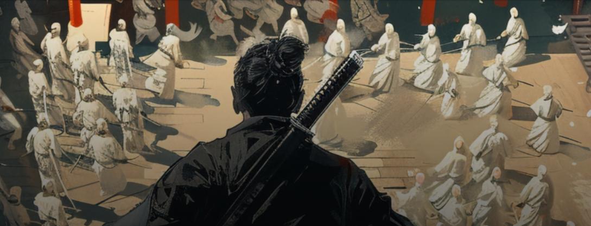
Долгожданная третья часть автора приватных статей с Хакера:Чит своими руками. Обходим простой античит и исследуем игру на Unity
В этой статье я попробую показать, как создать собственный чит, который будет противостоять используемым в играх античит‑системам. Для этого нам понадобится поупражняться в реверсе и познакомиться с устройством игр, написанных на Unity.
АНТИЧИТ
Итак, античит — это некая программа, которая мешает игрокам в онлайновые игры получать нечестное преимущество за счет использования стороннего ПО. Не буду пытаться объяснить это на абстрактном примере, лучше давай сразу перейдем к практике. По дороге все поймешь!Quick Universal Anti-Cheat Kit
Так как нет (или я просто не нашел) античитов уровня ядра с открытым исходным кодом, то выбирать будем из опенсорсных античитов, в которых присутствует только античит пользовательского уровня. Мой выбор пал на античит Quick Universal Anti-Cheat Kit (далее Quack).Сразу предупреждаю, что Quack — это лишь простенькая опенсорсная демонстрация концепции. Обойти ее проще, чем системы, которые используются в популярных играх. Все коммерческие античиты работают как на пользовательском уровне, так и на уровне ядра. Причем самые важные защитные функции обычно реализованы именно в виде драйвера.
Однако для обучения Quack сгодится как нельзя лучше, и изложенное дальше должно стать фундаментом для будущих изысканий.
Архитектура Quack
Давай посмотрим на общую архитектуру античита глазами ее автора. Далее я объясню, для чего нужен каждый выделенный на схеме компонент.
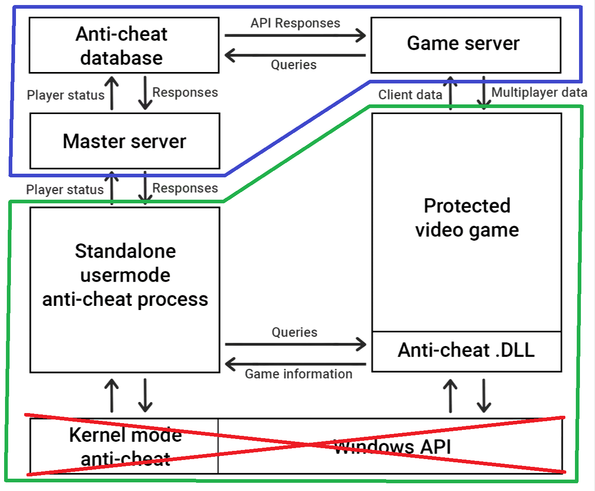
Зеленым цветом я выделил клиентскую часть (то, что будет работать на компьютере игрока):
- Protected video game — игра, которую мы запускаем на своем компьютере и которую будет защищать античит;
- Anti-cheat .DLL — пользовательская часть античита, DLL, которая существует в контексте созданного процесса игры и которая отвечает за защиту памяти процесса игры;
- Standalone usermode anti-cheat process — пользовательская часть античита. Это главный модуль античита (оркестратор), который общается с пользовательской и ядерной частями, а также держит связь с сервером античита;
- Kernel mode anti-cheat — ядерная часть античита. Отвечает за защиту двух других модулей античита. Не реализовано.
- Master server — отвечает за хранение учетной записи игрока и управление ею;
- Game server — отвечает за отслеживание состояния элементов в игре, а также местоположения игроков и врагов на карте;
- Anti-cheat database — база данных игроков.
Настраиваем Quack
Если после развертывания Quack (как это сделать, смотри в руководстве на GitHub и на YouTube) у тебя ничего не работает, то советую повнимательнее изучить следующие файлы и настроить сетевые адреса и порты в соответствии с реальными условиями.GameDevCAServer\Program.cs
var settings = MongoClientSettings.FromConnectionString(env["DB_URI"]);settings.ServerApi = new ServerApi(ServerApiVersion.V1);
var mongoClient = new MongoClient(settings);
database = mongoClient.GetDatabase(env["DB_NAME"]);
Quack-server\src\main.js
class Config {static DB_URI = process.env.DB_URI
static DB_NAME = process.env.DB_NAME
static PORT = process.env.PORT
static CLIENT = new MongoClient(this.DB_URI)
static DEV_MODE = true
static VERSION = process.env.npm_package_version
}
Quack-internal\constants.hpp
namespace constants {const LPCWSTR W_DLL_NAME { L"Quack-internal" };
const LPCSTR DLL_NAME{ "Quack-internal" };
const std::string VERSION { "0.6.5" };
constexpr unsigned IPC_PORT = 5175; // Local machine communications port
constexpr unsigned NET_PORT = 7982; // Foreign network communications port
static constexpr bool DBG = false;
}
Quack-client\constants.hpp
namespace constants {const std::string VERSION{ "0.4.2" };
const std::string NAME{ "Quack" };
constexpr unsigned IPC_PORT = 5175; // Local machine communications port
constexpr unsigned NET_PORT = 7982; // Foreign network communications port
static constexpr bool DBG = false;
}
Quack-client\flashpoint.cpp
http::Client cli{ "localhost", constants::NET_PORT };Проверяем работоспособность Quack
Для начала нам нужно убедиться в том, что все работает. Для этого так же, как и автор античита, будем использовать его игру Inertia, инжектор Destroject и внутренний чит Inertia-cheat. Подключимся к серверу по адресу lh (localhost) с ником xakep0.
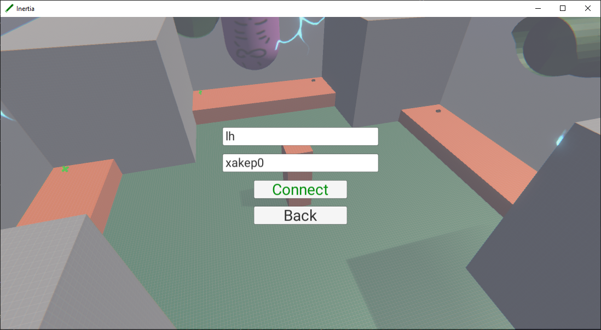
В консоли игрового сервера видим, что произошло подключение.
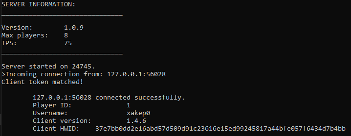
Также в базе данных античита видим, что появилась запись.
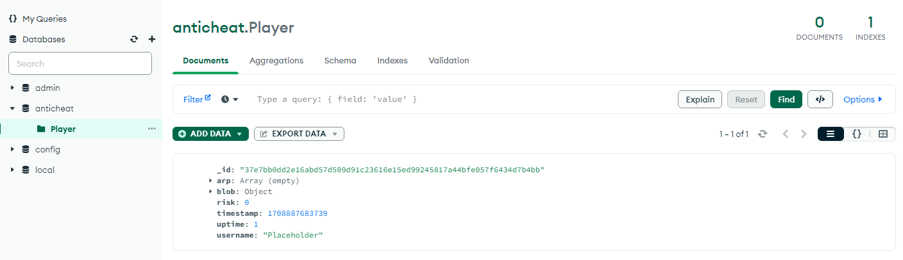
Начинаем тест. Для этого в командной строке выполним Destroject.exe Inertia (не забыв рядом положить Inertia-cheat.dll). Видим, что инжект чита успешно выполнен.
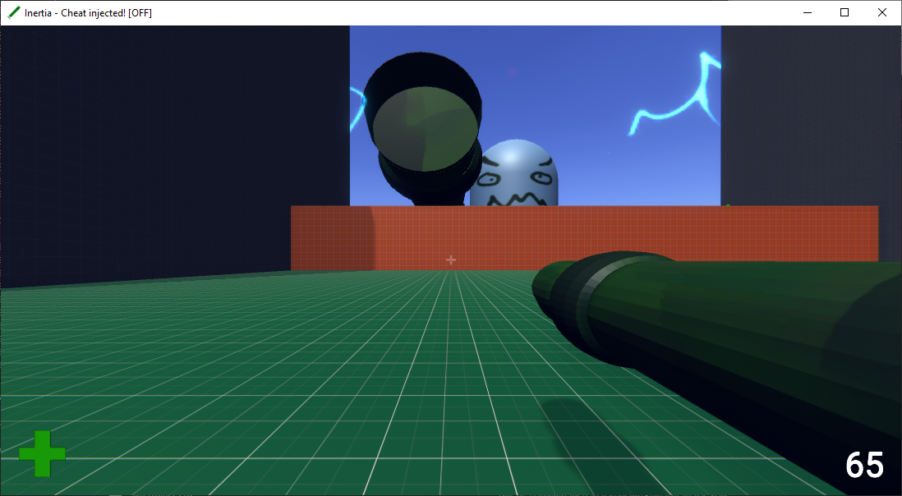
Активируем чит нажатием клавиши E.
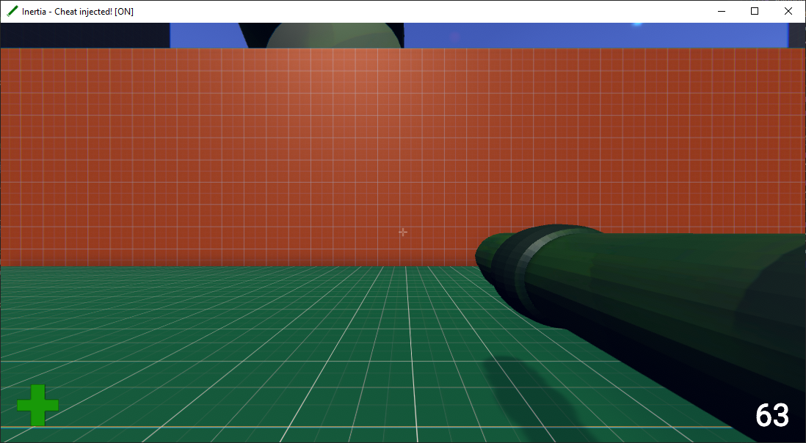
Видим, что чит активирован, но сразу же происходит бан.)
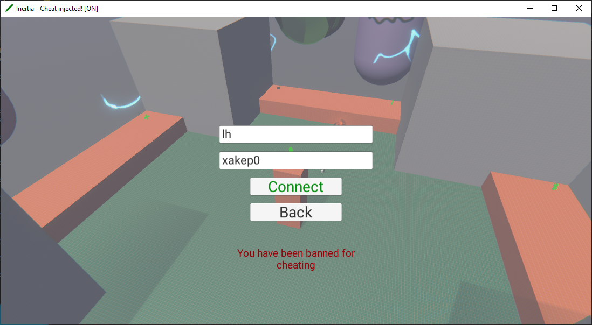
Посмотрев в БД античита, мы можем узнать, из‑за чего нас забанили.
Пробуем сменить никнейм, но нас все равно не пускают.
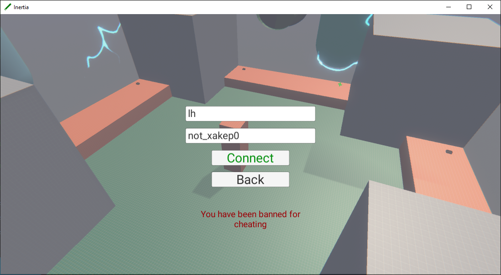
Если попытаться открыть Cheat Engine, он через пару секунд закроется, но бан не прилетит.
UNITY
Прежде чем расчехлять IDA Pro и приступать к реверсу античита, сделаем небольшое отступление. Если ты уже заглянул в код чита, то мог заметить следующий участок:Inertia-cheat\player.cpp
C:
std::optional<Player> GetPlayer() {
auto start_point = reinterpret_cast<std::uintptr_t>(GetModuleHandleA("UnityPlayer.dll"));
start_point += offsets::player.start_point;
// Get a pointer to health
const auto health_ptr = TraverseChain(start_point, offsets::player.ptr_chain).value_or(0u);
if (!health_ptr)
return std::nullopt;
const auto ammo_ptr = health_ptr - 0x4;
const Player player{
.health = reinterpret_cast<std::int32_t*>(health_ptr),
.ammo = reinterpret_cast<std::int32_t*>(ammo_ptr)
};
return player;
}Здесь стоит обратить внимание на строчку "UnityPlayer.dll". Дело в том, что игра написана на движке Unity.
Inertia-cheat\data.cpp
C:
namespace offsets {
PointerChain player = {
.start_point = 0x13A1340,
.ptr_chain { 0xC2C, 0xDC8, 0xEA8, 0x18, 0x38 }
};
}Также мы имеем цепочку указателей для UnityPlayer.dll. Откроем ее в IDA Pro по адресу base+0x13A1340. Видим, что здесь размещено значение переменной из стека и дальше поиск класса игрока идет в стеке.
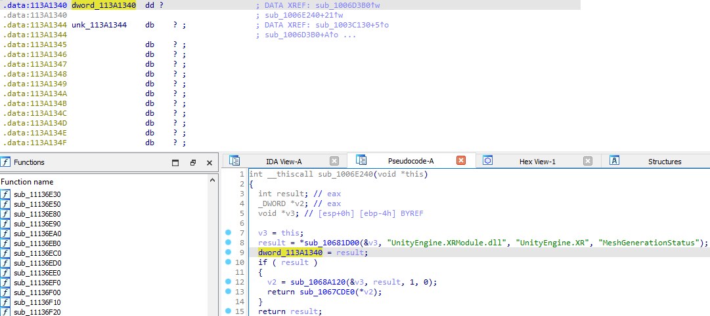
Чтобы облегчить себе задачу, воспользуемся утилитой symchk, которая позволит получить отладочные символы. Найти ее можно в составе Debugging Tools for Windows.
После установки symchk в командной строке выполним следующую команду:
Код:
symchk.exe /r UnityPlayer.dll /s srv*http://symbolserver.unity3d.com /vЗагруженные отладочные символы будут расположены здесь:
C:\ProgramData\dbg\sym\UnityPlayer_Win32_mono_x86.pdb\EAF358F010DF4F28A0807EA7305B4B241\UnityPlayer_Win32_mono_x86.pdb
После загрузим их в IDA Pro.
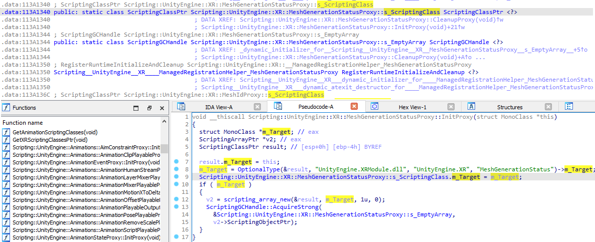
После загрузки отладочных символов картина яснее не стала. Но пожалуй, мы не будем углубляться. Я лишь резюмирую, что такой способ подходит для Unity-чита, если нужно только менять значения в классе игрока, а не отрисовывать что‑то (как я делал в прошлой статье).
Если хочешь подробнее изучить читы для Unity, оставлю ссылки:
- Unity game hacking
- A Beginner’s Guide To Hacking Unity Games
- Unity Hacking 101: Hacking with Reflection
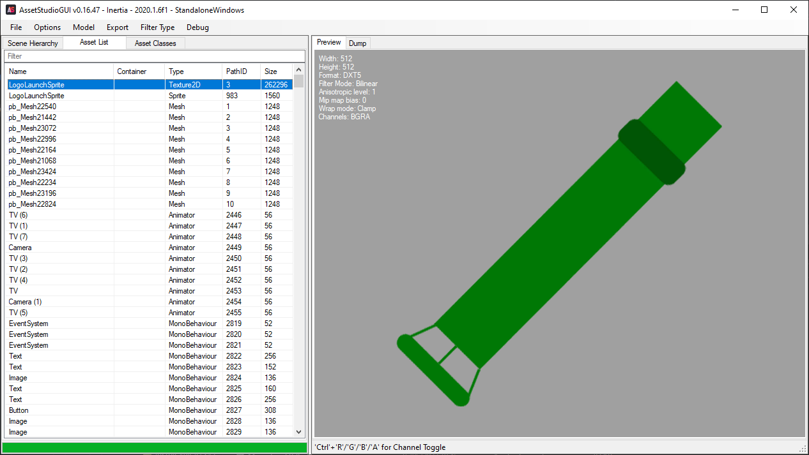
Mono
В Unity есть несколько вариантов бэкендов, которые могут исполнять игровой код. Наша игра исполняется в виртуальной машине Mono, и вся интересующая нас информация, в том числе класс игрока, находятся вот в этом файле:Inertia\Inertia_Data\Managed\Assembly-CSharp.dll
Откроем эту библиотеку в dnSpy.
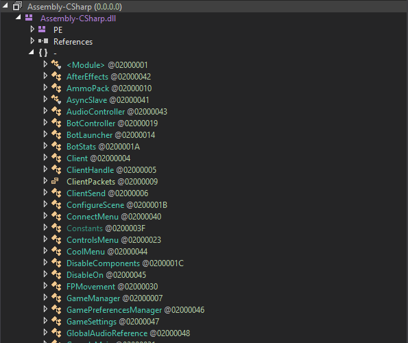
Слева будут указаны все классы игры, среди них мы с легкостью можем найти класс игрока, как для сетевой игры, так и для одиночной.
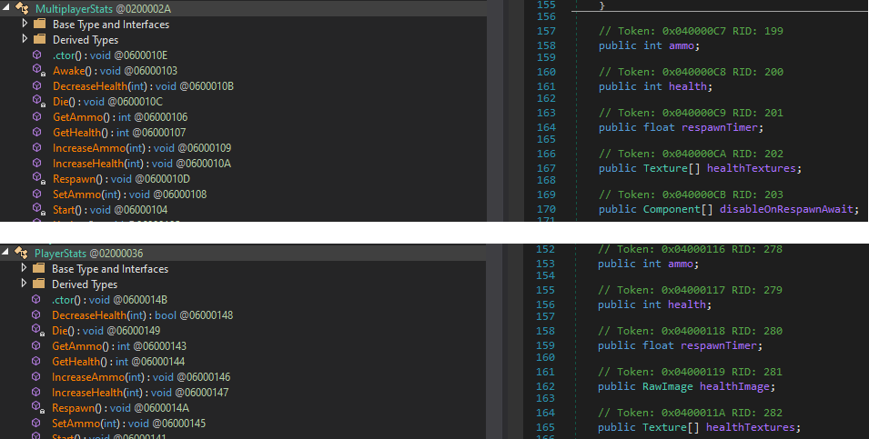
IL2CPP
Как вариант, код игры может быть транслирован в C++ при помощи бэкенда IL2CPP (Intermediate Language To C++) и скомпилирован. Ниже — более подробная схема этого процесса, а подробное описание ты найдешь в документации.
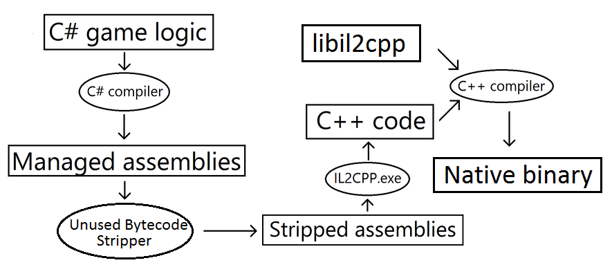
Если игра собрана с IL2CPP, то в Inertia\Inertia_Data\ мы не найдем ни папки Managed, ни Assembly-CSharp.dll, а интерес для нас будет представлять GameAssembly.dll. Если мы откроем этот файл в dnSpy, то не увидим ничего интересного.
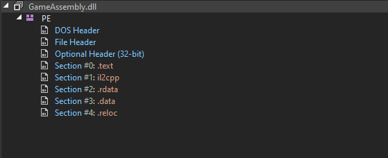
Все дело в том, что игровая логика была скомпилирована в нативный код. Впрочем, и на этот случай есть решение — утилита Il2CppDumper, которая поможет извлечь всю информацию.
Выполним такую команду:
Il2CppDumper.exe Inertia\GameAssembly.dll Inertia\Inertia_Data\il2cpp_data\Metadata\global-metadata.dat Inertia_dump
И получим папку Inertia_dump с содержимым, как на скриншоте.
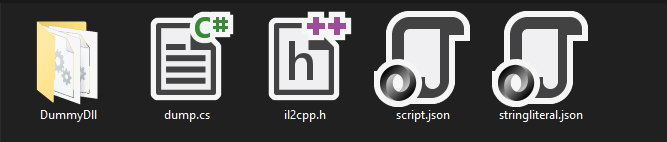
Файл dump.cs — восстановленный исходный код Assembly-CSharp.dll.
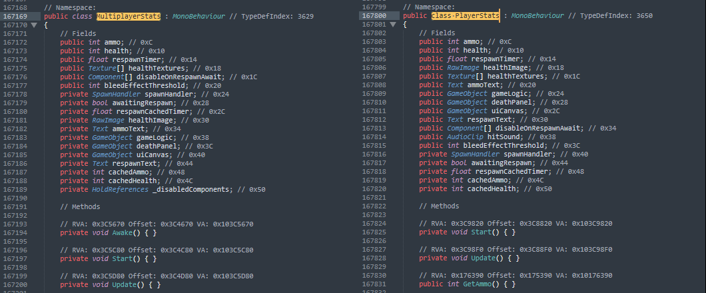
DummyDll — папка, которая содержит все восстановленные бинарные файлы. Это как раз и есть содержимое Managed, в том числе есть и наш Assembly-CSharp.dll.
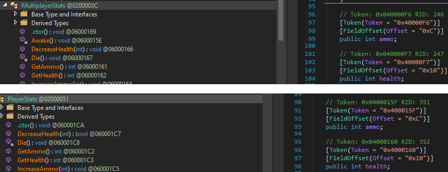
Прочие важные файлы:
- il2cpp.h — заголовочный файл со структурами;
- script.json — скрипт для ida.py, ghidra.py и Il2CppBinaryNinja;
- stringliteral.json — содержит всю информацию о найденных строках.
ИЗУЧАЕМ И ОБХОДИМ АНТИЧИТ
Для начала посмотрим, что есть в папке с игрой.
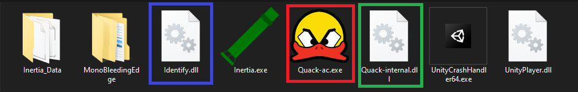
- Identify.dll — некая DLL, назначение которой нам неизвестно;
- Quack-ac.exe — главный модуль античита;
- Quack-internal.dll — библиотека, которая будет загружена в контекст игры.
Обходим детект по HWID
Для начала исследуем Identify.dll. Откроем ее в IDA Pro и перейдем в единственную экспортируемую функцию GetHWID. Сокращение HWID (Hardware Identification) дает нам понять, что функция собирает информацию о компьютере. Но в этом нам все‑таки нужно убедиться.
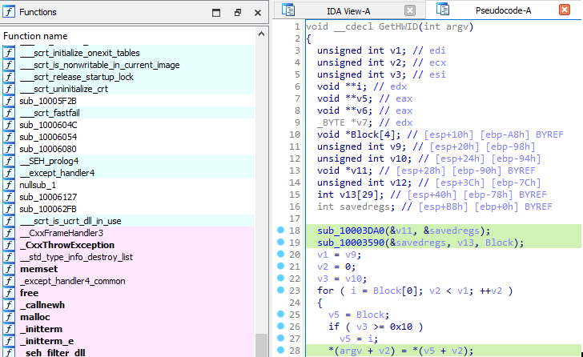
Перейдем в функцию sub_10003DA0 и увидим следующие константы.
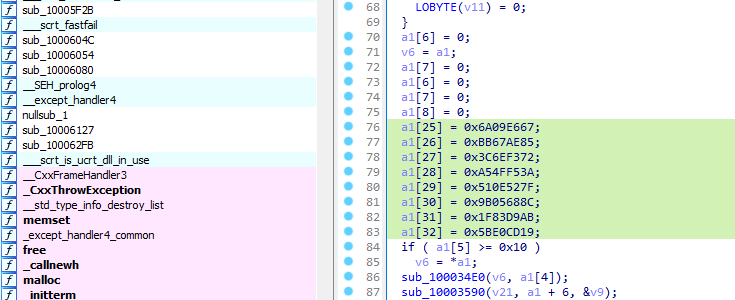
После гугления выясняем, что это часть алгоритма SHA-256. А значит, после того как соберется информация о железе игрока, от нее будет взят хеш по алгоритму SHA-256.
После перейдем в функцию sub_10003590 и снова изучим константы.
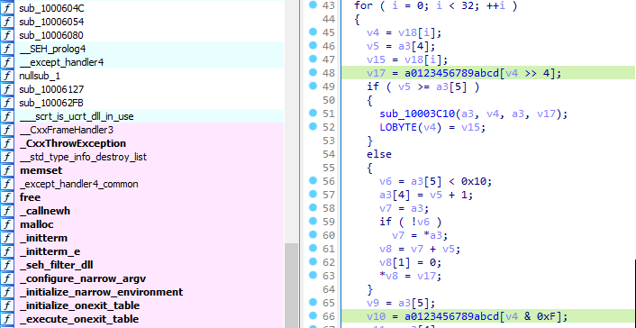
Снова гуглим и узнаём, что эти константы — часть алгоритма перевода байтов в шестнадцатеричную строку.
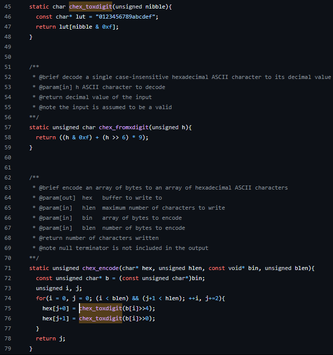
И последнее действие — копирование шестнадцатеричной строки SHA-256 в аргумент экспортируемой функции.
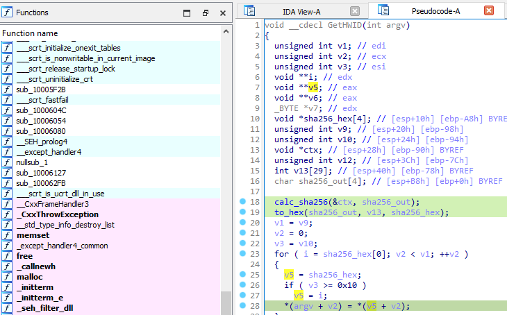
Имея полную картину, мы можем воспроизвести алгоритм, но хеш у нас будет браться не от HWID, а от рандомного значения. Для реализации возьмем код из реализации SHA-256.
C:
// Определение экспортируемой функции GetHWID
extern "C" {
void __declspec(dllexport) GetHWID(char* message) {
// Объявление переменной для хеша
SHA256 sha;
// Инициализация сида от текущего времени для рандома
srand((unsigned)time(NULL));
// Получение рандомного значения
std::string random = std::to_string(rand());
// Получение SHA-256 для рандомного значения
sha.update(random);
// Получение значения хеша
std::array<uint8_t, 32> digest = sha.digest();
// Получение шестнадцатеричной строки хеша
std::string sha256 = SHA256::toString(digest);
// Присвоение аргументу значения хеша
for (int i = 0u; i < sha256.length(); ++i) {
message[i] = sha256[i];
}
}
}Теперь заменим исходную Identify.dll нашей. Но к сожалению, подключиться не выходит.
Давай посмотрим, что происходит в окне, где у нас запущен сервер.

Оказывается, Identify.dll — это часть игры, позволяющая идентифицировать игрока, и к античиту не относится. Что ж, немного промахнулись, но наши наработки еще пригодятся дальше.
Обходим детект сигнатур
Античит, как и антивирус, умеет проверять сигнатуры бинарных файлов, в нашем случае — в поисках читов. В нашем случае база сигнатур хранится внутри Quack-internal.dll.
Выглядит эта база как список строк, где звездочка — это маска, означающая, что в этом месте может быть любой байт.
55 8B EC 83 EC 2C A1 * * * * 33 C5 89 45 FC 53 56 8B 35 * * * * 57 6A 23 8B F9 FF D6 A8 01 0F 85
68 * * * * FF 15 * * * * 8B 35 * * * * 8B 3D * * * * 03 F0 A1 * * * * 89 45 C8 3B F8 74 5D
50 A1 * * * * 33 C5 50 8D 45 F4 64 A3 * * * * 6A 19
Изучив код, находим функции, которые отвечают за сигнатурный детект.

- Инициализируется паттерн.
- Паттерн ищется в памяти.
- Если есть совпадение, запускается процедура бана.

Есть несколько вариантов: обфускация, виртуализация и изменение параметров компиляции кода. Пойдем по самому простому пути — попробуем выключить оптимизацию на этапе компиляции.

После компиляции откроем тот же кусок кода и посмотрим, помогло ли это изменить сигнатуру.

Как видим, это помогло!
55 8B EC 83 EC 2C A1 * * * * 33 C5 89 45 FC 53 56 8B 35 * * * * 57 6A 23 8B F9 FF D6 A8 01 0F 85
55 8B EC 6A FF 68 ED 40 00 10 64 A1 00 00 00 00 50 83 EC 24 A1 08 60 00 10 33 C5 89 45 F0 50 8D 45
Давай для проверки запустим игру, внедрим чит и активируем его.

Все успешно работает, и бана нет.
Обходим черный список DNS
В Quack-internal.dll есть проверка доменов, к которым обращался компьютер игрока.
Можем при желании убедиться, что это черный список, а не что‑то другое. Давай поищем функции, которые с ним работают.

- Инициализация доменов из черного списка.
- Вызов функции получения кеша DNS.
- Функция получения доменов из кеша.
- Поиск запретных доменов среди закешированных.
Код:
import requests
r = requests.get('https://aimware.net')Даже если мы не были при этом в игре, при следующем запуске нас забанят.

В кеше адрес все равно висит, поэтому нам нужно сбросить кеш DNS перед следующим запуском игры. Сделать это легко, просто выполним команду ipconfig /flushdns.
Так что лучше не посещать сайты, связанные с читами, в открытую и не использовать клиенты читов, где нужна авторизация.
INFO
Утилита для просмотра кеша DnsCache
Обходим принудительное завершение Cheat Engine
Помнишь, что при попытке открыть Cheat Engine он у нас сразу закрывался? Давай разберемся, почему.В Quack-internal.dll мы ничего не находим, но зато в Quack-ac.exe нашелся список нежелательных программ. Как только античит обнаружит их в памяти, он немедленно завершит их.
 Алгоритм поиска нежелательных программ
Алгоритм поиска нежелательных программ- Инициализация списка нежелательных программ.
- Передача названий в функцию поиска.
- Получение запущенных процессов.
- Перебор и сравнение имен процессов.
- Если совпадение найдено, процесс завершается.

Попробуем переименовать CE и запустить напрямую.

Как видим, все прошло успешно.
Анализируем пакеты
С помощью плагина ClassInfromer для IDA Pro посмотрим, какие статически слинкованные библиотеки используются в античите. Как видишь, это nlohmann и httplib. Вторая — явный признак того, что программа будет что‑то запрашивать или отправлять по сети. Давай узнаем, что именно.

Попробуем перехватить пакеты с помощью Wireshark.

Это так называемый пакет сердцебиения, который подтверждает, что процесс античита активен.

Тот же пакет шлется и на мастер‑сервер.

Пересылается и информация о найденом чите.

То же — на мастер‑сервер.

Вот как выглядит информация о найденном домене из черного списка.

То же идет и на мастер‑сервер.

Выяснив все это, мы можем изготовить поддельный Identify.dll.
C:
// Определение экспортируемой функции GetHWID
extern "C" {
void __declspec(dllexport) GetHWID(char* message) {
// Определение переменной хеша
std::string sha256 = "6b86b273ff34fce19d6b804eff5a3f5747ada4eaa22f1d49c01e52ddb7875b4b";
// Присвоение аргументу значения хеша
for (int i = 0u; i < sha256.length(); ++i) {
message[i] = sha256[i];
}
}
}
Код для нашего Quack-internal.dll.
#include "pch.h"
#include <chrono>
#include <thread>
#include<nlohmann/json.hpp>
#include<httplib.h>
// Для работы с секундами
using namespace std::chrono_literals;
// Функция потока
DWORD WINAPI run(LPVOID lpParam) {
// Объявление переменных
httplib::Result res;
nlohmann::json body{};
long long uptime;
// Определение клиента сервера и порта
httplib::Client cli{ "localhost", 7982 };
// Время
std::chrono::time_point<std::chrono::system_clock> time_start = std::chrono::system_clock::now();
// Задержка
std::chrono::seconds delay = 1s;
// Цикл
for (std::chrono::seconds seconds = 0s; ; ++seconds) {
// Вычисление времени соединения
uptime = std::chrono::duration_cast<std::chrono::seconds>(std::chrono::system_clock::now() - time_start).count();
// Пакет
body["heartbeat"] = {
{"uuid", "6b86b273ff34fce19d6b804eff5a3f5747ada4eaa22f1d49c01e52ddb7875b4b"},
{"name", "Placeholder"},
{"arp", ""},
{"risk", "0"},
{"uptime", uptime},
{"blob", {{"Game position", "[Placeholder]"}}}
};
// Post-запрос к серверу
if (res = cli.Post("/", body.dump(), "application/json")) {
// Успешно ли соединение?
if (res->status == 200) {
// В случае успеха заснуть
std::this_thread::sleep_for(delay);
// и продолжить выполнение
continue;
}
}
// Завершение процесса в том случае, если не получается установить соединение с сервером
ExitProcess(0);
}
}
// Главная функция
BOOL APIENTRY DllMain( HMODULE hModule,
DWORD ul_reason_for_call,
LPVOID lpReserved
)
{
switch (ul_reason_for_call)
{
case DLL_PROCESS_ATTACH:
// Запуск потока
if (HANDLE thread = CreateThread(nullptr,0,run,hModule,0,nullptr))
CloseHandle(thread);
case DLL_THREAD_ATTACH:
case DLL_THREAD_DETACH:
case DLL_PROCESS_DETACH:
break;
}
return TRUE;
}После компиляции удалим все ненужное и подменим DLL нашими.

В Wireshark будет только пакет сердцебиения к мастер‑серверу.

И в результате все прекрасно работает.
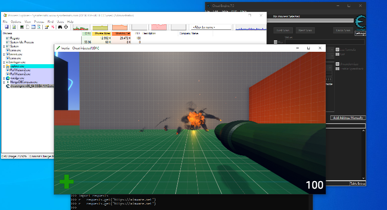

 MA Code Execution – Lystic's Blog
При использовании устройства DMA атакующий...
MA Code Execution – Lystic's Blog
При использовании устройства DMA атакующий...